<!doctype html>
<html lang="en">
<head>
  <meta charset="utf-8">
  <meta name="viewport" content="width=device-width, initial-scale=1">
  <title>arxiv digest — 2026-10-28</title>
  <style>
:root {
  --bg: #ffffff;
  --fg: #1f2328;
  --muted: #59636e;
  --border: #d0d7de;
  --card: #f6f8fa;
  --link: #0969da;
}
body {
  max-width: 980px;
  margin: 0 auto;
  padding: 2rem 1rem 5rem;
  font-family: -apple-system, BlinkMacSystemFont, "Segoe UI", Helvetica, Arial, sans-serif;
  line-height: 1.55;
  color: var(--fg);
  background: var(--bg);
}
a { color: var(--link); }
img { max-width: 100%; height: auto; }
pre, code { background: var(--card); border-radius: 6px; }
pre { padding: 1rem; overflow-x: auto; }
blockquote { border-left: 4px solid var(--border); padding-left: 1rem; color: var(--muted); }
details { margin: 0.6rem 0; }
summary { cursor: pointer; font-weight: 600; }
.paper-figures-scroll {
  display: flex;
  gap: 1rem;
  overflow-x: auto;
  overscroll-behavior-x: contain;
  padding: 0.75rem 0.25rem 1rem;
  margin: 1rem 0 1.25rem;
  border-top: 1px solid var(--border);
  border-bottom: 1px solid var(--border);
  scroll-snap-type: x proximity;
}
.paper-figure-card {
  flex: 0 0 min(260px, 72vw);
  scroll-snap-align: start;
  background: var(--card);
  border: 1px solid var(--border);
  border-radius: 12px;
  padding: 0.55rem;
}
.paper-figure-card img {
  display: block;
  width: 100%;
  max-height: 240px;
  object-fit: contain;
  background: white;
  border-radius: 8px;
}
.paper-figure-caption {
  display: block;
  margin-top: 0.5rem;
  color: var(--muted);
  font-size: 0.85rem;
}
.figure-strip-hint {
  color: var(--muted);
  font-size: 0.9rem;
  margin-bottom: -0.3rem;
}
</style>
  <script>
    window.MathJax = {
      tex: {
        inlineMath: [['$', '$'], ['\\(', '\\)']],
        displayMath: [['$$', '$$'], ['\\[', '\\]']],
        processEscapes: true,
        processEnvironments: true
      },
      options: {
        skipHtmlTags: ['script', 'noscript', 'style', 'textarea', 'pre', 'code'],
        ignoreHtmlClass: 'tex2jax_ignore',
        processHtmlClass: 'tex2jax_process'
      }
    };
  </script>
  <script id="MathJax-script" async
    src="https://cdn.jsdelivr.net/npm/mathjax@3/es5/tex-chtml.js"></script>
</head>
<body>
<header style="background-color: #333; color: white; padding: 15px; margin-bottom: 20px;">
  <h1 style="margin: 0; font-size: 24px;">
    <a href="https://ochelpan.github.io/arXiv_clean/" style="color: white; text-decoration: none;">Main</a>
  </h1>
</header>

<h1>Daily arXiv Report</h1>

<hr>
<p>
<a href="index.html">← Index</a>
 · <a href="papers_07.html">← Previous</a> · <a href="papers_09.html">Next →</a>
</p>
<hr>

<h2>Papers 141–160</h2>
<p><a id="paper-2610.34295"></a></p>
<h3 id="controllable-charge-spin-conversion-in-sliding-multiferroic-metal-fe3gate2"><a href="http://arxiv.org/abs/2610.34295v1">Controllable charge-spin conversion in sliding multiferroic metal Fe3GaTe2</a></h3>
<p><strong>Authors:</strong> Tongrui Li, Lidong Zhang, Weiyi Pan<br>
<strong>Type:</strong> theory · <strong>Category:</strong> other · <strong>PDF:</strong> <a href="https://arxiv.org/pdf/2610.34295v1">https://arxiv.org/pdf/2610.34295v1</a><br>
<strong>Analysis basis:</strong> full PDF text, analyzed in chunks</p>
<div class="figure-strip-hint">↔ Scroll figures horizontally</div>
<div class="paper-figures-scroll">
<figure class="paper-figure-card">
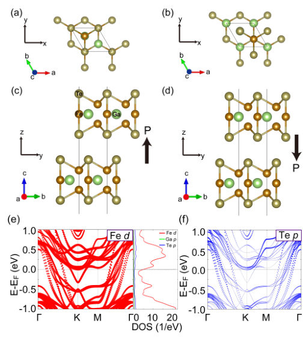
<figcaption class="paper-figure-caption"><b>Fig 1.</b> FIG. 1. Crystal structure and electronic structure of bi- layer Fe3GaTe2. (a,b) Top views of the two ferroelectric configurations with opposite interlayer sliding. (c,d) Corre- sponding side views of the two configurations. The black arrows indicate the directions of the out-of-plane electric po- larization, which are reversed between the two states. (e,f) Orbital-projected electronic band structures along the Γ–K– M–Γ path, highlighting the Fe-d and Te-p contributions, re- spectively. The size of the colored markers represents the corresponding orbital weight. The projected density of states is shown on the right side of (e), with Fe-d, Ga-p, and Te-p contributions shown in red, green, and...</figcaption>
</figure>
<figure class="paper-figure-card">
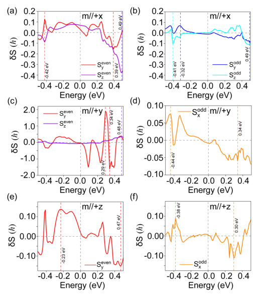
<figcaption class="paper-figure-caption"><b>Fig 2.</b> FIG. 2. Energy dependence of the total current-induced spin accumulation in P↑state under an electric field applied along the +x direction, with the reference field Ex = 1 V/˚A. (a,b) Time-reversal-even and -odd components, respectively, for m ∥+x. (c,d) Corresponding even and odd components for m ∥+y. (e,f) Corresponding even and odd components for m ∥+z. The solid curves show the total spin accumu- lation summed over all atomic contributions. The colored vertical dashed lines indicate selected representative energies used for the momentum-resolved analysis, with their colors corresponding to the associated spin components.</figcaption>
</figure>
<figure class="paper-figure-card">
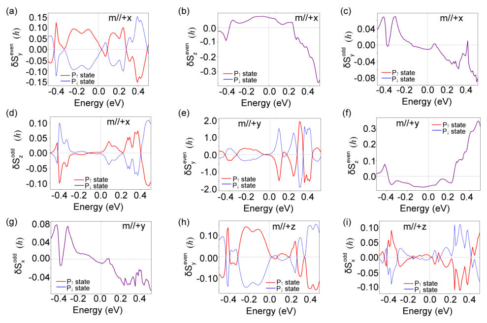
<figcaption class="paper-figure-caption"><b>Fig 3.</b> FIG. 3. Ferroelectric-state dependence of the current-induced spin accumulation under an electric field applied along the +x direction, with the reference field Ex = 1 V/˚A. Red and blue curves denote P↑and P↓states, respectively. (a–d) δSeven y , δSeven z , δSodd y , and δSodd z , respectively, for m ∥+x. Upon switching from P↑to P↓, δSeven y and δSodd z reverse sign, whereas δSeven z and δSodd y remain unchanged. (e–g) δSeven y , δSeven z , and δSodd x , respectively, for m ∥+y. Here, only δSeven y reverses sign, while δSeven z and δSodd x are unchanged. (h,i) δSeven y and δSodd x , respectively, for m ∥+z, both of which reverse sign between the two ferroelectric states.</figcaption>
</figure>
<figure class="paper-figure-card">
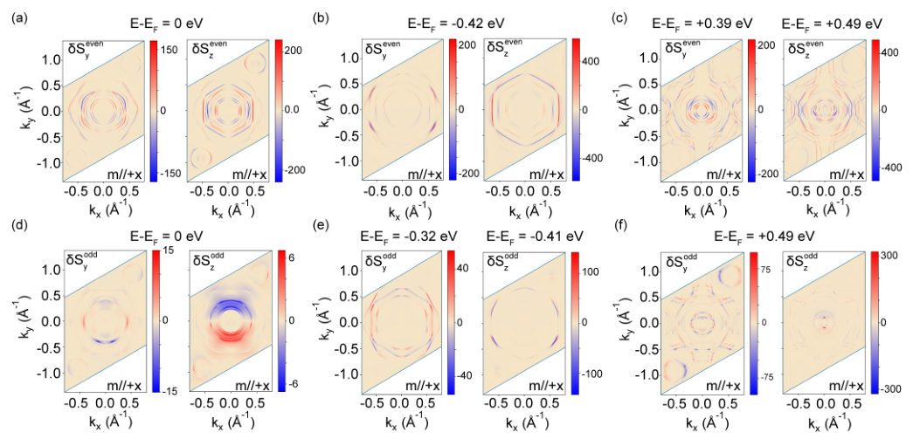
<figcaption class="paper-figure-caption"><b>Fig 4.</b> FIG. 4. Momentum-resolved current-induced spin accumulation in P↑state for m ∥+x under an electric field applied along the +x direction, with the reference field Ex = 1 V/˚A. (a) δSeven y (k) and δSeven z (k) at the Fermi level, E−EF = 0. (b) Corresponding even components at E −EF = −0.42 eV. (c) δSeven y (k) at E −EF = +0.39 eV and δSeven z (k) at E −EF = +0.49 eV. (d) δSodd y (k) and δSodd z (k) at E −EF = 0. (e) δSodd y (k) at E −EF = −0.32 eV and δSodd z (k) at E −EF = −0.41 eV. (f) Corresponding odd components at E −EF = +0.49 eV. Red and blue denote positive and negative contributions, respectively. The representative energies are selected from the extrema of the energy-dependent...</figcaption>
</figure>
<figure class="paper-figure-card">
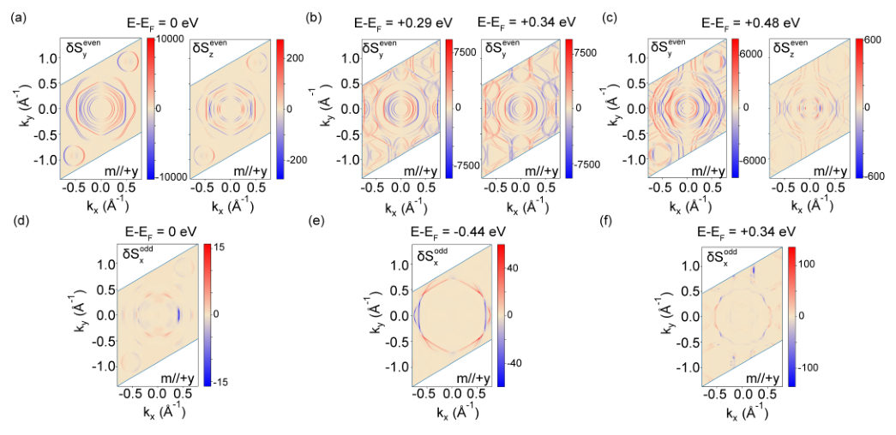
<figcaption class="paper-figure-caption"><b>Fig 5.</b> FIG. 5. Momentum-resolved current-induced spin accumulation in P↑state for m ∥+y under an electric field applied along the +x direction, with the reference field Ex = 1 V/˚A. (a) δSeven y (k) and δSeven z (k) at the Fermi level, E −EF = 0. (b) δSeven y (k) at E −EF = +0.29 and +0.34 eV. (c) δSeven y (k) and δSeven z (k) at E −EF = +0.48 eV. (d–f) δSodd x (k) at E −EF = 0, −0.44, and +0.34 eV, respectively. Red and blue denote positive and negative contributions, respectively. The representative energies are selected from the extrema of the energy-dependent responses shown in Fig. 2.</figcaption>
</figure>
</div>
<p><strong>Summary.</strong> This theoretical study demonstrates that the bilayer Fe3GaTe2 can function as a highly tunable platform for charge-spin conversion. By combining ferroelectric switching and magnetic field control, researchers can selectively manipulate the spin accumulation and spin-current generation. This work highlights the potential of multiferroic metals for next-generation spintronic devices.</p>
<p><strong>Why it may be interesting.</strong> The ability to use electric fields (ferroelectricity) to tune spin-charge conversion in a magnetic material is a key concept in spintronics, which is highly relevant to understanding emergent phenomena in strongly correlated and functional electronic materials.</p>
<details>
<summary>Detailed structure</summary>
<p><strong>Main problem.</strong> The study investigates how charge-spin conversion can be controllably manipulated within a single magnetic material by exploiting the interplay between ferroelectricity and magnetism.</p>
<p><strong>Main result.</strong> The sliding-ferroelectric bilayer Fe3GaTe2 is established as a tunable platform where both the ferroelectric state and the magnetization direction can selectively control the magnitude and sign of the spin accumulation and spin-current responses.</p>
<p><strong>Method.</strong> The research employs first-principles calculations, symmetry analysis, and Wannier-based linear response theory to model the Edelstein and spin Hall responses.</p>
<p><strong>Model / system.</strong> The physical system is the sliding-ferroelectric bilayer Fe3GaTe2. The analysis uses a tight-binding Hamiltonian derived from Fe-d, Ga-p, and Te-p orbitals, incorporating spin-orbit coupling and considering two degenerate ferroelectric ground states.</p>
<p><strong>Key observables.</strong> Edelstein response ($\delta S_i$), transverse spin Hall conductivity ($\sigma_{SH}$), spin accumulation ($\delta \mathbf{S}_i$), and spin-current responses ($\mathbf{J}_{\alpha i}$).</p>
<p><strong>Important parameters / regimes.</strong> The switching barrier ($\approx 16.3 	ext{ meV}$), the electric field strength ($1 	ext{ V}/	ext{\AA}$ or $10^{10} 	ext{ V/m}$), and the broadening parameter ($\Gamma = 10 	ext{ meV}$).</p>
<p><strong>Assumptions / limitations.</strong> The analysis separates responses into TR-even and TR-odd components based on magnetization reversal, and the linear response formalism is used.</p>
<p><strong>Figures summary.</strong> Figures illustrate layer-resolved current-induced spin accumulation ($\delta S$) and spin conductivity ($\sigma$) components for different magnetization directions and polarization states.</p>
<p><strong>Paper structure.</strong> The paper systematically analyzes the dependence of charge-spin conversion on the ferroelectric state and magnetization direction, detailing the energy dependence of the Edelstein response and the momentum-space character of the spin conductivity.</p>
</details>
<details>
<summary>Abstract</summary>
<p>Controlling charge--spin conversion within a single magnetic material is important for compact spintronic devices. Using first-principles calculations, symmetry analysis, and Wannier-based linear response, we study the Edelstein and spin Hall responses of sliding-ferroelectric bilayer \ce{Fe3GaTe2}. Two degenerate ground states with opposite interlayer sliding vectors and out-of-plane dipole moments are separated by a calculated switching barrier of about $16.3$~meV per unit cell. Magnetization orientation determines the allowed current-induced spin components, while ferroelectric switching induces component-selective sign reversals governed by $M_z\mathcal T$ for in-plane magnetization and by $M_z$ for out-of-plane magnetization. The Edelstein response is strongly energy dependent, with spin accumulation approaching $2~\hbar$ for $\mathbf m\parallel+y$ under a reference field of $1$~V/Å. Momentum-resolved analysis links the TR-even and TR-odd Edelstein responses to $Γ$-centered constant-energy contours and localized interband features, respectively. Spin-conductivity contributions show the opposite momentum-space character, with broad sign-competing spin Berry curvature for TR-even and narrow Fermi-surface contours for TR-odd. The transverse spin Hall conductivity reaches $\sim10^{3}\,(\hbar/e)(\mathrm{S/cm})$ and depends strongly on ferroelectric state and magnetization direction. Magnetization rotations in the $xy$ and $xz$ planes reveal symmetry-allowed higher angular harmonics in both spin accumulation and spin-current responses. These results establish sliding-ferroelectric bilayer \ce{Fe3GaTe2} as a tunable platform for reconfigurable spin accumulation and spin-current generation.</p>
</details>
<p><sub><a href="#top">↑ back to top</a></sub></p>

<p><a id="paper-2610.33196"></a></p>
<h3 id="cooperation-of-itinerant-and-localized-physics-in-the-magnetic-phase-diagram-of-214-ruddlesden-popper-iridates"><a href="http://arxiv.org/abs/2610.33196v1">Cooperation of itinerant and localized physics in the magnetic phase diagram of 214 Ruddlesden-Popper iridates</a></h3>
<p><strong>Authors:</strong> Francesco Cassol, Michele Casula, Benjamin Lenz<br>
<strong>Type:</strong> theory · <strong>Category:</strong> strongly correlated electrons · <strong>PDF:</strong> <a href="https://arxiv.org/pdf/2610.33196v1">https://arxiv.org/pdf/2610.33196v1</a><br>
<strong>Analysis basis:</strong> full PDF text, analyzed in chunks</p>
<div class="figure-strip-hint">↔ Scroll figures horizontally</div>
<div class="paper-figures-scroll">
<figure class="paper-figure-card">

<figcaption class="paper-figure-caption"><b>Fig 1.</b> Figure 1: U −T phase diagram of t5 2g iri- dates. The solid (dashed-dotted) black line represents the transition from a para- magnetic to a magnetic phase in the three(single)-band model. The blue line UW denotes the Widom line within the fully paramagnetic solution. The green line marks the passage from Slater to Heisenberg magnetism. The horizontal green bars denote a region where mag- netism is stabilized by the cooperation of localized and itinerant electrons. The color scheme refers to phases in the three- band model. Within the AFM dome, the shaded area delimits the coexistence re- gion. The upper axis reports the Coulomb interaction in units of the bandwidth of the jeff = 1/2 band W....</figcaption>
</figure>
<figure class="paper-figure-card">
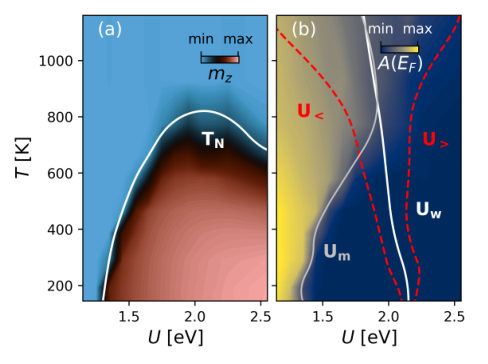
<figcaption class="paper-figure-caption"><b>Fig 2.</b> Figure 2: Phase diagram details. Staggered magnetization mz (a) and spectral weight at the Fermi level A(EF) (b) as a function of temperature T and interaction strength U. The magnetic transition temperature TN and the PM Widom line UW are indicated in white. The PM metal-insulator crossover region is marked by dashed lines, whereas Um highlights the metal-insulator crossover of the AFM solution.</figcaption>
</figure>
<figure class="paper-figure-card">
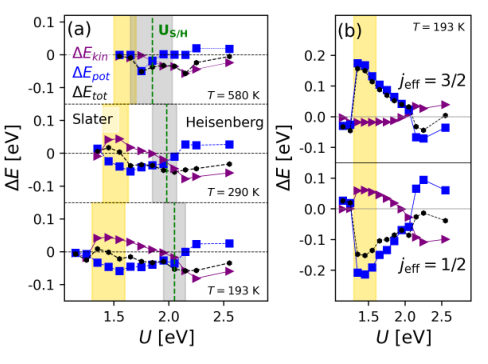
<figcaption class="paper-figure-caption"><b>Fig 3.</b> Figure 3: Competition between AFM and PM phase. Energy dif- ference between the AFM and the PM state, ∆Ei = EAFM i −EPM i , in the kinetic, potential and total energy at different temperatures T. The grey area indicates the passage from Slater to Heisenberg type of magnetism, the green dashed lines denote the middle of this crossover US/H, consistent with Figure 1. The coexistence region is indicated as a yellow area. Panel (b) shows the energy difference projected into the jeff = 1/2 and jeff = 3/2 subspaces.</figcaption>
</figure>
<figure class="paper-figure-card">
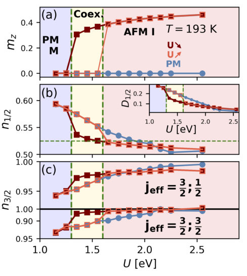
<figcaption class="paper-figure-caption"><b>Fig 4.</b> Figure 4: Magnetic transition and coexistence region. Staggered magnetization (a), filling of the jeff = 1/2 (b) and jeff = 3/2 states (c) respectively as a function of interaction strength. The inset shows the double occupancy D1/2 of the jeff = 1/2 states. The U</figcaption>
</figure>
<figure class="paper-figure-card">
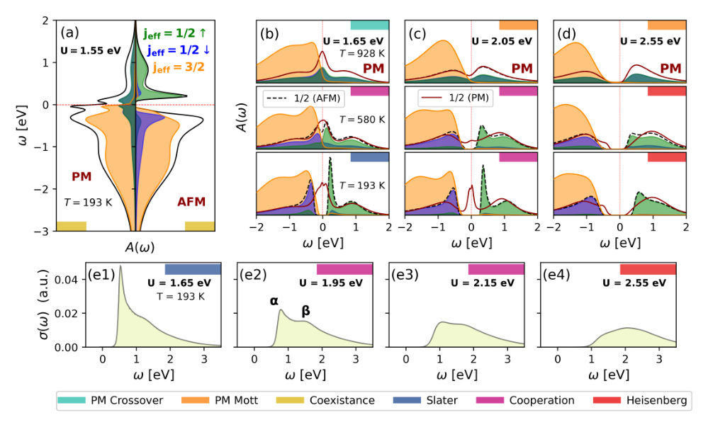
<figcaption class="paper-figure-caption"><b>Fig 5.</b> Figure 5: Evolution of the local spectral function. (a) Comparison of the PM metal and AFM insulating solution in the coexistence region, highlighting the different orbital contributions. (b-d) Temperature dependence of the local spectral function for electron-electron interaction strengths situating the system in different regions of the phase diagram of Fig. 1. The total jeff = 1/2 contribution is indicated by a dashed line and, for comparison, we also indicate the jeff = 1/2 component in the PM phase by solid brown lines in order to show the approximate coincidence with the Hubbard sub-bands observed in the magnetic state. (e1-e4) Optical conductivity at T = 193 K, showing a...</figcaption>
</figure>
</div>
<p><strong>Summary.</strong> This theoretical study investigates the magnetic phase diagram of iridates using DMFT on a three-orbital Hubbard model. It concludes that the insulating state arises from a cooperative interplay between itinerant and localized electron physics, rather than purely Mott or purely Slater physics. The findings reconcile conflicting experimental data by identifying the two-peak optical conductivity as the key diagnostic signature of this intermediate regime.</p>
<p><strong>Why it may be interesting.</strong> The work provides a quantitative, first-principles framework to interpret complex experimental signatures (like optical conductivity) in strongly correlated magnetic insulators, which is crucial for understanding exotic quantum materials.</p>
<details>
<summary>Detailed structure</summary>
<p><strong>Main problem.</strong> To determine the origin of the antiferromagnetic insulating state in 214 Ruddlesden-Popper iridates ($    ext{Sr}_2   ext{IrO}_4$ and $   ext{Ba}_2   ext{IrO}_4$) by distinguishing between itinerant (Slater) and localized (Mott-Heisenberg) electron physics.</p>
<p><strong>Main result.</strong> Both materials reside in a cooperative intermediate regime where itinerant and localized physics coexist, with the optical conductivity's two-peak structure serving as a reliable fingerprint for this regime.</p>
<p><strong>Method.</strong> Dynamical Mean-Field Theory (DMFT) is employed to compute the interaction-temperature phase diagram using a realistic three-orbital $t_{2g}$ Hubbard model incorporating spin-orbit coupling.</p>
<p><strong>Model / system.</strong> The system is the $5d^5$ Ruddlesden-Popper iridates ($    ext{Sr}_2   ext{IrO}_4$, $  ext{Ba}_2   ext{IrO}_4$), modeled by a three-orbital $t_{2g}$ Hubbard Hamiltonian including crystal field splitting and SOC. The analysis compares single-band vs. multi-orbital descriptions.</p>
<p><strong>Key observables.</strong> Antiferromagnetic order parameter ($m_z$), spectral weight at the Fermi level ($A(E_F)$), and the two-peak structure of the optical conductivity.</p>
<p><strong>Important parameters / regimes.</strong> Interaction strength ($U$), temperature ($T$), and the ratio of kinetic to potential energy contributions ($\Delta E_{	ext{kin}}$ vs. $\Delta E_{	ext{pot}}$).</p>
<p><strong>Assumptions / limitations.</strong> The use of DMFT approximations and the necessity of including the higher-energy $j_{	ext{eff}} = 3/2$ bands to accurately capture correlation effects.</p>
<p><strong>Figures summary.</strong> Figures illustrate the $U-T$ phase diagram, showing the crossover between PM metal, AFM insulator, and intermediate regimes, and detail the evolution of the magnetic moment and spectral function across these transitions.</p>
<p><strong>Paper structure.</strong> The paper establishes the theoretical framework using the multi-orbital Hubbard model, calculates the phase diagram using DMFT, analyzes the crossover boundaries (Slater vs. Mott), and concludes by unifying the understanding of both $ ext{Sr}_2   ext{IrO}_4$ and $   ext{Ba}_2   ext{IrO}_4$ within a single theoretical framework.</p>
</details>
<details>
<summary>Abstract</summary>
<p>The $5d^5$ Ruddlesden-Popper iridates Sr$_2$IrO$_4$ and Ba$_2$IrO$_4$ have attracted considerable attention as spin-orbit entangled analogues of the cuprates, yet the origin of their antiferromagnetic insulating state, of Slater or of Mott-Heisenberg type, remains debated. We find that both materials sit in an intermediate regime in which itinerant and localized electrons cooperate in stabilizing the antiferromagnetic order, with Ba$_2$IrO$_4$ slightly more correlated than Sr$_2$IrO$_4$. We obtain this by computing, within dynamical mean-field theory, the interaction-temperature phase diagram of a realistic three-orbital $t_{2g}$ Hubbard model with spin-orbit coupling. Our study shows that neither the behavior of the gap across the Néel temperature nor the spin-polaron features of the spectral function unambiguously identify the cooperative regime, whereas the two-peak structure of the optical conductivity is reproduced only there and therefore constitutes a reliable fingerprint. By placing both compounds in a common phase diagram, our results reconcile seemingly contradictory experimental and theoretical reports, and provide a unified framework for future studies of the 214 iridates and of other spin-orbit coupled correlated materials.</p>
</details>
<p><sub><a href="#top">↑ back to top</a></sub></p>

<p><a id="paper-2610.33386"></a></p>
<h3 id="decision-aware-validation-of-zero-noise-extrapolation-in-qaoa-optimization-landscapes"><a href="http://arxiv.org/abs/2610.33386v1">Decision-aware validation of zero-noise extrapolation in QAOA optimization landscapes</a></h3>
<p><strong>Authors:</strong> Vicenzo Scavino Alfaro<br>
<strong>Type:</strong> theory · <strong>Category:</strong> quantum information and computing · <strong>PDF:</strong> <a href="https://arxiv.org/pdf/2610.33386v1">https://arxiv.org/pdf/2610.33386v1</a><br>
<strong>Analysis basis:</strong> full PDF text, analyzed in chunks</p>
<div class="figure-strip-hint">↔ Scroll figures horizontally</div>
<div class="paper-figures-scroll">
<figure class="paper-figure-card">
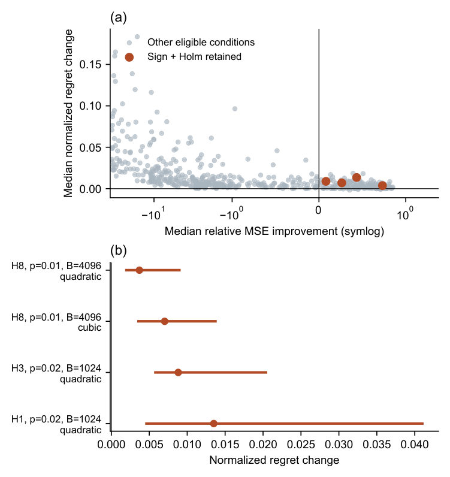
<figcaption class="paper-figure-caption"><b>Fig 1.</b> Figure 1: Paired effects in the replication family. (a) Median relative mean-squared- error improvement and median normalized regret change for the 507 eligible conditions; excluded conditions are omitted, and the four Holm rejections are shown as larger orange points. The horizontal axis uses a symmetric logarithmic scale to retain large negative relative improvements. (b) Medians and seed interquartile ranges of the regret change for the four retained conditions.</figcaption>
</figure>
<figure class="paper-figure-card">
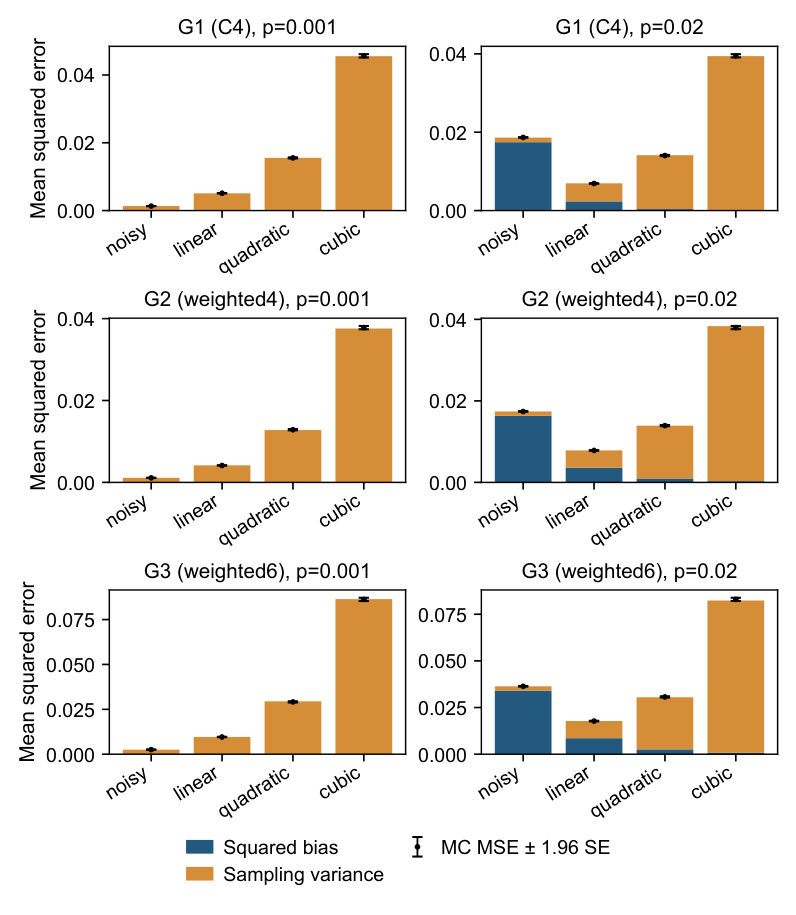
<figcaption class="paper-figure-caption"><b>Fig 2.</b> Figure 2: Bias–variance control on a 12 × 12 grid with B = 1024 shots per point for every method and 500 repetitions per configuration: exact grid-averaged squared bias and sampling variance (stacked bars) and Monte Carlo estimates of the mean-squared error with ±1.96 standard errors (points). This control is separate from the 120 × 120 screen.</figcaption>
</figure>
<figure class="paper-figure-card">
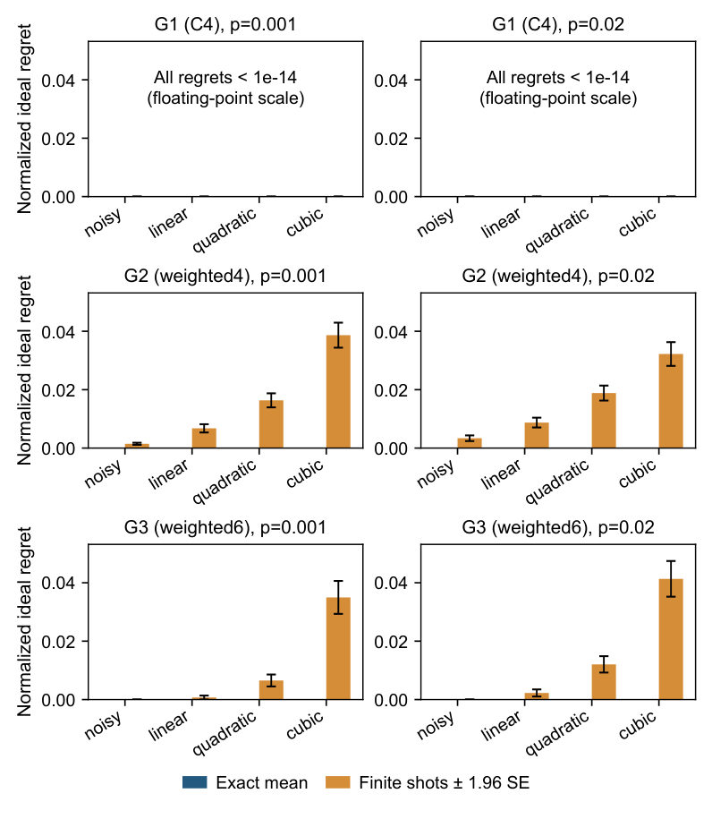
<figcaption class="paper-figure-caption"><b>Fig 3.</b> Figure 3: Decision outcomes for the bias–variance control (12 × 12 grid, B = 1024, 500 repetitions per configuration): normalized ideal regret of exact-mean and finite-shot selections. A common vertical scale is used for all graphs. Error bars denote ±1.96 Monte Carlo standard errors and are descriptive.</figcaption>
</figure>
</div>
<p><strong>Summary.</strong> This work rigorously tests the assumption that reducing noise in quantum measurements via Zero-Noise Extrapolation (ZNE) automatically improves the performance of variational quantum algorithms like QAOA. The authors find that while ZNE can substantially lower estimation error (MSE), this gain does not guarantee better decision-making, as evidenced by minimal or slightly increased parameter regret.</p>
<p><strong>Why it may be interesting.</strong> It provides a crucial, rigorous benchmark for quantum algorithm developers, warning that optimizing only for low noise (low MSE) might lead to poor algorithmic performance (high regret) in practical optimization tasks.</p>
<details>
<summary>Detailed structure</summary>
<p><strong>Main problem.</strong> The paper investigates whether the accuracy gains achieved through Zero-Noise Extrapolation (ZNE) in variational quantum optimization (QAOA) correspond to a better decision, measured by parameter regret.</p>
<p><strong>Main result.</strong> While ZNE can significantly reduce the Mean-Squared Error (MSE) of observables, the study finds that these improvements often accompany only negligible or slightly increased mean regret, suggesting that decision-making must be validated alongside estimation error.</p>
<p><strong>Method.</strong> The authors perform in-depth simulations on QAOA optimization landscapes, comparing unmitigated estimation against ZNE using Richardson orders, and quantifying performance using both MSE and normalized regret.</p>
<p><strong>Model / system.</strong> The model is the Quantum Approximate Optimization Algorithm (QAOA) applied to the MaxCut problem on 4 to 6 qubits. The analysis is performed on simulated, exhaustive optimization grids.</p>
<p><strong>Key observables.</strong> Mean-Squared Error (MSE) and normalized simple regret ($R$), used to assess both estimation accuracy and decision quality.</p>
<p><strong>Important parameters / regimes.</strong> Depolarizing channel parameter ($p$), total shot budget ($B$), and Richardson extrapolation orders ($m=1, 2, 3$).</p>
<p><strong>Assumptions / limitations.</strong> The results are based on simulated exhaustive grids, not actual hardware or adaptive optimization loops, and the confirmation is limited to a small set of tested conditions.</p>
<p><strong>Figures summary.</strong> The notes reference tables and figures showing the comparison of MSE improvements (7.65–73.09%) versus minimal regret increases (0.0031–0.0073) for the few conditions that passed rigorous statistical testing.</p>
<p><strong>Paper structure.</strong> The paper follows a structure of defining the problem (ZNE vs. decision quality), developing paired metrics (MSE vs. Regret), conducting an exploratory screening analysis (Holm correction), and finally presenting a frozen confirmation on fresh data to draw conclusions.</p>
</details>
<details>
<summary>Abstract</summary>
<p>Zero-noise extrapolation (ZNE) is usually validated by the accuracy of mitigated observables, yet variational quantum optimization uses those observables to select parameters. We ask whether, and by how much, an accuracy gain from ZNE coincides with a worse decision. In depth-one simulations of the quantum approximate optimization algorithm (QAOA) for MaxCut on four to six qubits, each sampled $120\times120$ landscape yields both its mean-squared error (MSE) and the ideal regret of its selected grid minimum, comparing Richardson orders one to three with unmitigated estimation at the same total shot budget per grid point. In an exploratory screen of 675 conditions, whose per-point random seeds collide, a familywise (Holm) analysis retains only four of 540 replication conditions as showing both directional MSE improvement and regret increase. A frozen confirmation with 100 fresh paired repetitions per condition reproduces all four: median MSE improvements of 7.65-73.09% accompany median normalized regret increases of only 0.0031-0.0073. We distinguish a bias route, in which residual bias reorders the mean landscape, from a variance route, in which Richardson weights amplify finite-shot noise. Exact first and second moments on a bounded control grid find no bias-route reversal: mitigated mean landscapes preserve the ideal minima, and ZNE can more than halve expected MSE, yet finite-shot selections incur higher mean regret. Decision losses that survive strict testing are few and small in this benchmark, but reproducible and not revealed by aggregate MSE. We present a paired benchmark and recommend reporting decision regret alongside estimation error when mitigation is assessed for optimization. Results concern simulated exhaustive grids, not hardware or optimizer loops.</p>
</details>
<p><sub><a href="#top">↑ back to top</a></sub></p>

<p><a id="paper-2610.35353"></a></p>
<h3 id="direct-observation-of-a-spin-polarized-surface-dirac-gap-in-the-antiferromagnetic-topological-insulator-ndbi"><a href="http://arxiv.org/abs/2610.35353v1">Direct observation of a spin-polarized surface Dirac gap in the antiferromagnetic topological insulator NdBi</a></h3>
<p><strong>Authors:</strong> Yuto Fukushima, Hiroyuki S. Suzuki, Masayuki Ochi, Takuma Nishida, Toshiya Ikenobe, Hiraku Saito, Yuto Kinoshita, Kaishu Kawaguchi, Hiroaki Tanaka, Ayumi Harasawa, Takushi Iimori, Koichiro Yaji, Masashi Tokunaga, Taro Nakajima, Kiyohisa Tanaka, Takahiro Morimoto, Ryo Mori, Takeshi Kondo<br>
<strong>Type:</strong> both · <strong>Category:</strong> other · <strong>PDF:</strong> <a href="https://arxiv.org/pdf/2610.35353v1">https://arxiv.org/pdf/2610.35353v1</a><br>
<strong>Analysis basis:</strong> full PDF text, analyzed in chunks</p>
<div class="figure-strip-hint">↔ Scroll figures horizontally</div>
<div class="paper-figures-scroll">
<figure class="paper-figure-card">
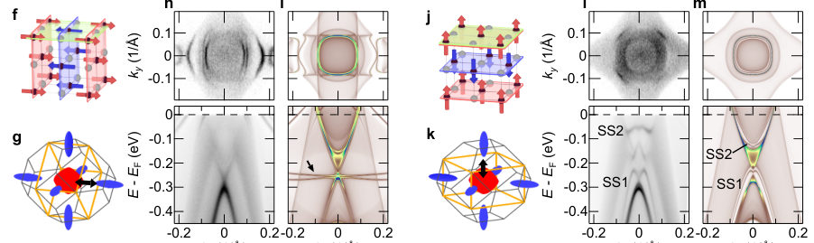
<figcaption class="paper-figure-caption"><b>Fig 1.</b> FIG. 1. Electronic structure of NdBi across magnetic phases and domains. a, Bulk band structure of NdBi in the paramagnetic (PM) phase, highlighting the band inversion between Bi 6p and Nd 5d orbitals. b, Crystal structure of NdBi, with the cleavage plane shown in green. c, Schematic of the bulk and surface Brillouin zones (BZs). d, Fermi surface map and ARPES intensity plot of the band dispersion along ¯Γ– ¯M of NdBi measured by ARPES in the paramagnetic phase. e, Fermi surface and band dispersion along ¯Γ– ¯M calculated using density functional theory (DFT). f, Magnetic structure of the AFM-A domain. g, Folded BZ due to magnetic ordering along [100]. h, Fermi surface map and band...</figcaption>
</figure>
<figure class="paper-figure-card">
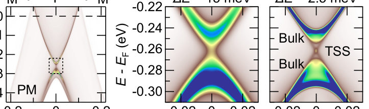
<figcaption class="paper-figure-caption"><b>Fig 2.</b> FIG. 2. Energy resolution effect on the bulk band and the surface Dirac cone in NdBi. a,b, DFT-calculated band dispersion of paramagnetic phase along the ¯Γ– ¯M direction, showing the spectral weight of bulk (a) and surface (b) states. c-d, Simulated ARPES images showing the impact of energy resolution on the visibility of the bulk band gap marked by a dotted rectangle. The calculations in a and b are convoluted with energy resolutions of 15 meV in c and d, and 2.5 meV in e and f, respectively. The topological surface state (TSS) is only clearly resolved in the surface calculation when using high energy resolution (2.5 meV), as shown in f.</figcaption>
</figure>
<figure class="paper-figure-card">
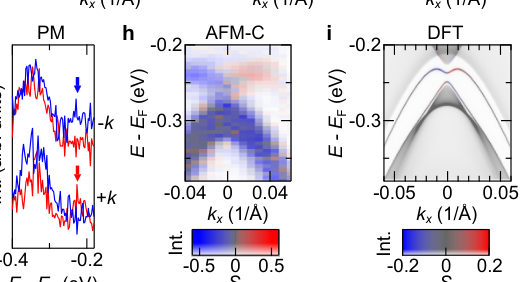
<figcaption class="paper-figure-caption"><b>Fig 3.</b> FIG. 3. Observation of gapped surface Dirac cone entangled from the bulk band. a, High-resolution ARPES image along the kx direction (ky = 0 ˚A−1) measured in the paramagnetic phase (T = 44 K). The energy distribution curve (EDC) at ¯Γ is overlaid in red. b, Curvature plot of the ARPES data shown in a. c, DFT-calculated band structure in the paramagnetic phase. d-f, Same as a-c but for the AFM-C domain (T = 13 K), showing the emergence of an M-shaped surface band and the opening of a Dirac gap. The EDC in d shows two peaks at ¯Γ (black arrows), indicating the gap. g, Spin-resolved EDC spectra at +k and −k positions (as indicated in a), showing opposite spin polarizations. Red and blue lines...</figcaption>
</figure>
<figure class="paper-figure-card">
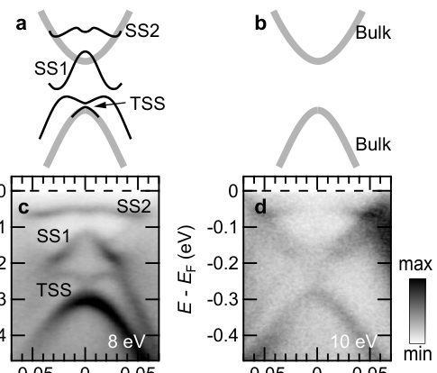
<figcaption class="paper-figure-caption"><b>Fig 4.</b> FIG. 4. Suppression of surface state ARPES signals at higher photon energies. a,b Schematic band dispersions representing both surface states (TSS, SS1, and SS2) and bulk states (a), and only bulk states (b), corresponding to c and d, respectively. c,d ARPES intensity maps along the ¯Γ– ¯M direction measured at photon energies of 8 eV (c) and 10 eV (d). While both surface and bulk bands are observed at the lower photon energy (8 eV), matrix-element effects strongly suppress the surface-state intensity at the higher photon energy (10 eV), dominantly leaving only the signals from the bulk states, as illustrated in a and b, respectively.</figcaption>
</figure>
<figure class="paper-figure-card">
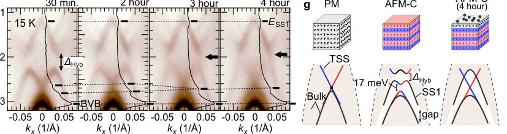
<figcaption class="paper-figure-caption"><b>Fig 5.</b> FIG. 5. Evolution of the hybridization gap and Dirac cone with temperature and sur- face contamination. a, Temperature evolution of ARPES images from 25 K (paramagnetic phase) to 13 K (AFM-C domain), showing the emergence of surface states (SS1 and SS2) and the development of the hybridization gap (∆Hyb). b, Temperature dependence of the Dirac cone and SS1, determined from the EDC peak positions. For the EDC fittings, we employed a Gaussian function combined with a linear background. No constraints were imposed on the fitting parame- ters. The gray dotted line traces the TSS in the PM phase. c, Temperature dependence of the 110 magnetic reflection peak measured by neutron scattering. The...</figcaption>
</figure>
</div>
<p><strong>Summary.</strong> This work provides definitive spectroscopic evidence for an intrinsic, spin-polarized Dirac gap in the AFM-TI $    ext{NdBi}$. By using high-resolution ARPES, the authors successfully distinguish the surface state gap from bulk features, confirming that the gap opens only when surface magnetism is established. This resolves a major theoretical discrepancy in the field and establishes $   ext{NdBi}$ as a model system for studying topological magnetism.</p>
<p><strong>Why it may be interesting.</strong> The rigorous experimental and theoretical confirmation of a gap opening linked directly to magnetic order in a topological material provides a robust platform for studying magnetoelectric coupling and topological quantum phenomena, which are key areas in condensed matter theory.</p>
<details>
<summary>Detailed structure</summary>
<p><strong>Main problem.</strong> The paper addresses the long-standing discrepancy regarding the magnitude and origin of the Dirac gap in Antiferromagnetic Topological Insulators (AFM-TIs). It aims to definitively observe the intrinsic surface Dirac gap.</p>
<p><strong>Main result.</strong> The authors directly observed a sizable, spin-polarized surface Dirac gap ($\sim 17 	ext{ meV}$) in $  ext{NdBi}$ that opens only when surface magnetic order is present, confirming its intrinsic nature.</p>
<p><strong>Method.</strong> The study combines high-resolution spin- and angle-resolved photoemission spectroscopy (ARPES) with Density Functional Theory (DFT) calculations, supplemented by temperature and contamination studies.</p>
<p><strong>Model / system.</strong> The physical system is the antiferromagnetic topological insulator $    ext{NdBi}$, which is studied in both paramagnetic (PM) and antiferromagnetic (AFM) phases. The analysis focuses on the topological surface Dirac cone (TSSC) and its coupling to the bulk electronic structure.</p>
<p><strong>Key observables.</strong> Dirac gap magnitude ($\Delta_{	ext{gap}}$), spin polarization of the surface cone, temperature dependence of the gap, and magnetic order parameter ($\sqrt{I_{110}}$).</p>
<p><strong>Important parameters / regimes.</strong> Observed gap ($\sim 17 	ext{ meV}$), DFT prediction ($\sim 12 	ext{ meV}$), Néel temperature ($T_N \approx 24 	ext{ K}$), and critical exponent $eta$ matching the 3D Ising model.</p>
<p><strong>Assumptions / limitations.</strong> The analysis assumes that high-resolution ARPES can successfully disentangle the intrinsic topological surface state from bulk contributions, and that the gap opening is directly driven by surface magnetic order.</p>
<p><strong>Figures summary.</strong> Figures illustrate electronic structures in different magnetic domains (PM vs. AFM), show the temperature evolution of the hybridization gap ($\Delta_{Hyb}$), and map the spin polarization of the surface states across the magnetic transition.</p>
<p><strong>Paper structure.</strong> The paper systematically presents evidence by first establishing the necessity of high-resolution ARPES to separate surface/bulk states. It then maps the electronic structure across magnetic domains, quantifies the gap opening, and finally correlates the gap's temperature dependence and critical scaling with the bulk magnetic order parameter.</p>
</details>
<details>
<summary>Abstract</summary>
<p>A gapped Dirac cone in antiferromagnetic topological insulators (AFM-TIs) is essential for realizing the quantized anomalous Hall effect, yet its intrinsic magnitude remains controversial. In the prototypical AFM-TI MnBi2Te4, however, the observed Dirac gap is significantly smaller than theoretical predictions or nearly absent, highlighting a long-standing discrepancy. Here we demonstrate that NdBi hosts a spin-polarized topological surface Dirac cone with a sizable gap of 17 meV at the Dirac point, in excellent agreement with density functional theory predictions (12 meV). This direct observation is enabled by high-resolution 7 eV laser-based spin- and angle-resolved photoemission spectroscopy, which unambiguously disentangles the spin-polarized surface Dirac cone from bulk-derived states. Furthermore, through temperature dependence and controlled surface contamination, we establish a direct linkage between surface magnetism and the Dirac gap, demonstrating that the gap opens only in the presence of surface magnetic order. These results provide definitive spectroscopic evidence for an intrinsic Dirac gap in AFM-TIs and establish NdBi as a model platform to resolve the long-standing discrepancy between experiment and theory in AFM-TIs.</p>
</details>
<p><sub><a href="#top">↑ back to top</a></sub></p>

<p><a id="paper-2610.35722"></a></p>
<h3 id="distillable-entanglement-is-continuous"><a href="http://arxiv.org/abs/2610.35722v1">Distillable entanglement is continuous</a></h3>
<p><strong>Authors:</strong> Lukas Schmitt, David Sutter<br>
<strong>Type:</strong> theory · <strong>Category:</strong> quantum information and computing · <strong>PDF:</strong> <a href="https://arxiv.org/pdf/2610.35722v1">https://arxiv.org/pdf/2610.35722v1</a><br>
<strong>Analysis basis:</strong> full PDF text, analyzed in chunks</p>
<div class="figure-strip-hint">↔ Scroll figures horizontally</div>
<div class="paper-figures-scroll">
<figure class="paper-figure-card">
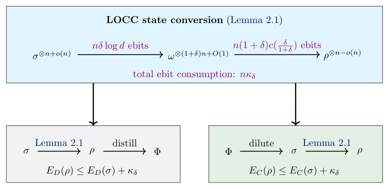
<figcaption class="paper-figure-caption"><b>Fig 1.</b> Figure 1: The key element of the proof is the “LOCC state conversion lemma,” which converts n+o(n) copies of σ, using nκδ + o(n) ebits, into an approximation of n −o(n) copies of ρ with vanishing trace- distance error, where κδ is given in Equation (9). Concatenating this conversion with an entanglement distillation protocol yields nED(ρ)−o(n) ebits with vanishing error. Lemma 2.2 then implies ED(ρ) ≤ ED(σ) + κδ. Since κδ is unchanged when ρ and σ are interchanged, we obtain |ED(ρ) −ED(σ)| ≤κδ, establishing continuity. A similar argument proves continuity of EC, as explained in Remark 1.3.</figcaption>
</figure>
<figure class="paper-figure-card">
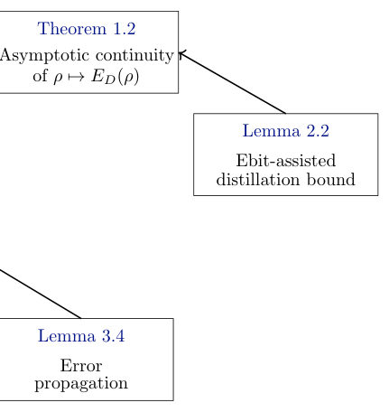
<figcaption class="paper-figure-caption"><b>Fig 2.</b> Figure 2: Relations of all lemmas used to prove the assertion of Theorem 1.2.</figcaption>
</figure>
</div>
<p><strong>Summary.</strong> This paper proves that distillable entanglement, a key measure of quantum resource, is a continuous function of the input quantum state. By constructing an explicit LOCC protocol, the authors derive a precise asymptotic bound relating the difference in entanglement between two states to their trace distance. This result solidifies the mathematical framework for quantifying how smoothly entanglement changes with small perturbations in the quantum state.</p>
<p><strong>Why it may be interesting.</strong> The rigorous mathematical characterization of entanglement measures like distillable entanglement is fundamental for understanding the resource theory of quantum information, which underpins quantum communication protocols.</p>
<details>
<summary>Detailed structure</summary>
<p><strong>Main problem.</strong> The paper aims to rigorously prove the continuity of distillable entanglement, $ED(
ho)$, for arbitrary bipartite quantum states.</p>
<p><strong>Main result.</strong> It establishes an explicit asymptotic continuity bound for $ED(
ho)$ and related measures like entanglement cost, showing that the difference between the distillable entanglement of two states is bounded by terms involving the trace distance and the system dimension logarithmically.</p>
<p><strong>Method.</strong> The proof constructs an explicit LOCC protocol that converts one state to another, bounding the required ebit cost using the trace distance between the states. This involves advanced techniques like asymptotic mixing lemmas and Hoeffding's inequality.</p>
<p><strong>Model / system.</strong> The analysis focuses on bipartite density matrices $
ho_{AB}$ in the space of quantum states, utilizing the concept of distillable entanglement, which measures the asymptotic rate of converting the state into maximally entangled pairs via LOCC.</p>
<p><strong>Key observables.</strong> Distillable entanglement ($ED(
ho)$), Trace distance ($\delta(
ho, \sigma)$), Entanglement Cost ($EC(
ho)$), and the asymptotic ebit conversion rate.</p>
<p><strong>Important parameters / regimes.</strong> The system dimension ($d$), the trace distance ($\epsilon$), and the number of copies ($n$) used in the asymptotic limit.</p>
<p><strong>Assumptions / limitations.</strong> The results are asymptotic, relying on the state difference tending to zero ($\delta 	o 0$) and the use of specific lemmas concerning LOCC state conversion.</p>
<p><strong>Figures summary.</strong> Figure 1 summarizes the proof flow using the LOCC state conversion lemma, while Figure 2 visualizes the logical relations of the key lemmas used to prove the main continuity theorem.</p>
<p><strong>Paper structure.</strong> The paper builds the continuity proof by first establishing the LOCC state conversion lemma, then applying this lemma to derive the continuity bound for $ED(
ho)$, and finally showing that related measures like $EC(
ho)$ follow the same structure.</p>
</details>
<details>
<summary>Abstract</summary>
<p>We prove continuity of distillable entanglement, the optimal asymptotic rate at which copies of a bipartite state can be converted into maximally entangled pairs by local operations and classical communication (LOCC) with vanishing error. We establish an explicit asymptotic continuity bound that holds for arbitrary bipartite states and depends logarithmically on the system dimension. This bound has the same structure as known continuity bounds for conditional entropy, entanglement cost, and relative entropy of entanglement. Our proof constructs an explicit LOCC protocol that converts either of two arbitrary bipartite states into the other at an ebit cost that vanishes as their trace distance tends to zero.</p>
</details>
<p><sub><a href="#top">↑ back to top</a></sub></p>

<p><a id="paper-2610.33800"></a></p>
<h3 id="efficient-block-encodings-of-vibrational-hamiltonians"><a href="http://arxiv.org/abs/2610.33800v1">Efficient Block Encodings of Vibrational Hamiltonians</a></h3>
<p><strong>Authors:</strong> Shashank G. Mehendale, Ignacio Loaiza, Shreyas Malpathak, Stepan Fomichev, Danial Motlagh, Artur F. Izmaylov<br>
<strong>Type:</strong> theory · <strong>Category:</strong> quantum information and computing · <strong>PDF:</strong> <a href="https://arxiv.org/pdf/2610.33800v1">https://arxiv.org/pdf/2610.33800v1</a><br>
<strong>Analysis basis:</strong> full PDF text, analyzed in chunks</p>
<div class="figure-strip-hint">↔ Scroll figures horizontally</div>
<div class="paper-figures-scroll">
<figure class="paper-figure-card">
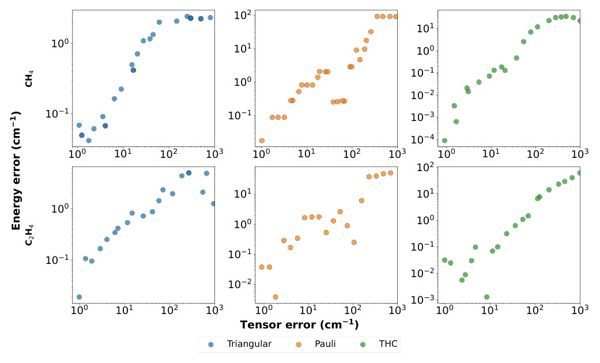
<figcaption class="paper-figure-caption"><b>Fig 1.</b> Figure 1. Ground-state energy error versus tensor approximation error calculated using the Frobenius norm for the Triangular, Pauli, and THC LCUs, shown from left to right. The top and bottom rows correspond to CH4 (9 modes) and C2H4 (12 modes), respectively. Both Hamiltonians include terms up to two-mode coupling and use 5 modals per mode.</figcaption>
</figure>
<figure class="paper-figure-card">
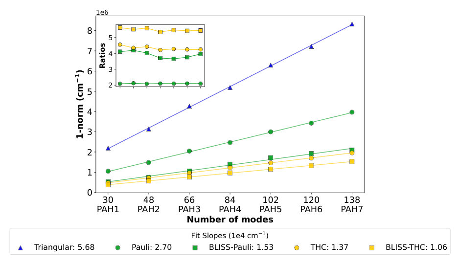
<figcaption class="paper-figure-caption"><b>Fig 2.</b> Figure 2. Comparison of LCU 1-norms across seven two-mode-coupling PAH Hamiltonians. The main panel shows the 1-norms for the Triangular, Pauli, and THC LCUs, with the BLISS technique applied to further reduce the 1-norms for the Pauli and THC methods. Linear fits versus the number of modes are overlaid as guides to the observed scaling; the fitted slopes are reported in the legend. The inset shows the ratios of the Triangular LCU 1-norm to the Pauli, BLISS-Pauli, THC, and BLISS-THC 1-norms.</figcaption>
</figure>
<figure class="paper-figure-card">
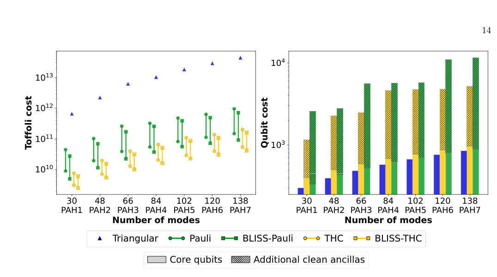
<figcaption class="paper-figure-caption"><b>Fig 3.</b> Figure 3. Toffoli costs (left) and logical qubit costs (right) for QPE ground-state energy estimation of seven second-quantized, two-mode-coupling PAH Hamiltonians with a target QPE accuracy of 1 cm−1. Methods labeled “BLISS” use BLISS to reduce the LCU 1-norm. Because BLISS has a negligible effect on the logical qubit cost, separate BLISS qubit bars are omitted. A small x-axis offset between different methods was used for visual clarity. The vertical ranges on the left show the Toffoli–qubit tradeoffs available through QROM for the Pauli and THC methods. The upper endpoint of each range corresponds to dirty- ancilla-assisted Select-Copy QROM [52], while the lower endpoint corresponds to...</figcaption>
</figure>
<figure class="paper-figure-card">
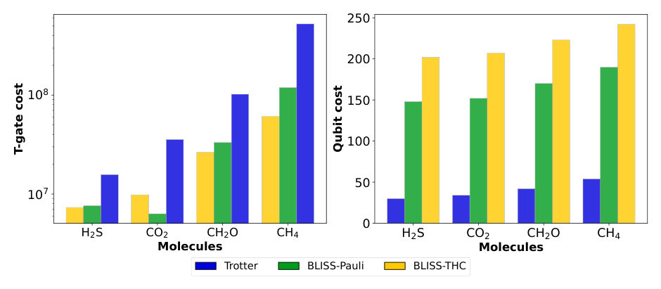
<figcaption class="paper-figure-caption"><b>Fig 4.</b> Figure 4. Comparison of quantum resources required to estimate vibrational energies via QPE to an accuracy of 10 cm−1</figcaption>
</figure>
<figure class="paper-figure-card">
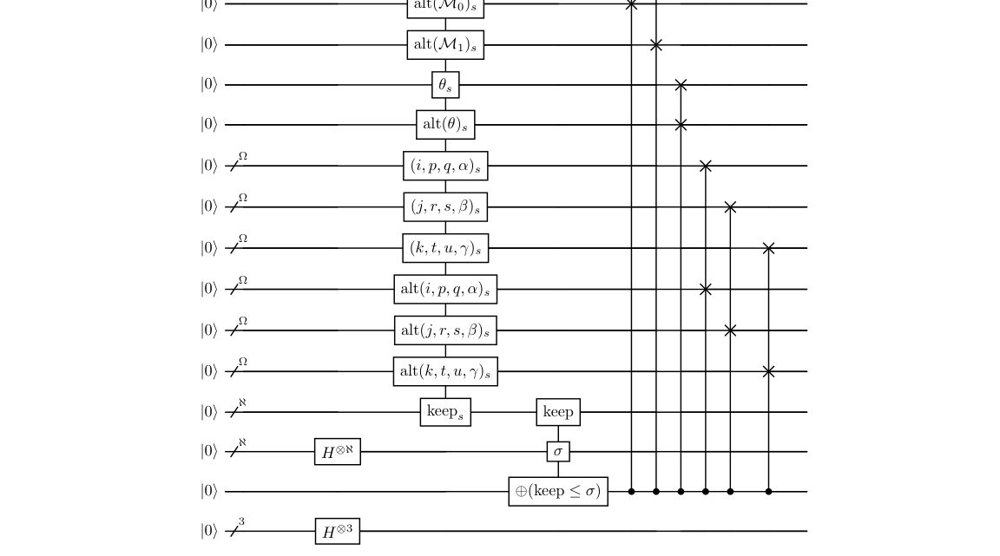
<figcaption class="paper-figure-caption"><b>Fig 5.</b> Figure 5. Quantum circuit detailing the PREP operation for block-encoding a second-quantized vibrational Hamiltonian expressed as a Pauli LCU. The first register from the top is used to create a master index that acts as an address to load all the necessary indices. The next four qubits are used to load mode-coupling level flags and their alternate values. The θ and alt(θ) qubits store the primary and alternate coefficient-sign bits used in alias sampling. The six registers of size Ωare used to load tensor indices and their alternate values. Ω= ⌈log2 M⌉+ 2⌈log2 N⌉+ 1 accommodates a single mode index, two modal indices, and a Boolean flag denoting modal index equality, which is needed in the...</figcaption>
</figure>
</div>
<p><strong>Summary.</strong> This paper introduces novel, highly efficient block-encoding strategies for simulating molecular vibrations on quantum computers. By combining Tensor Hypercontraction (THC) with the Block-Invariant Symmetry Shift (BLISS) technique, the authors drastically reduce the required quantum circuit resources. These improvements demonstrate a path toward scaling quantum simulations of complex molecular systems to larger sizes.</p>
<p><strong>Why it may be interesting.</strong> This work directly addresses the resource scaling bottleneck in quantum simulation of molecular dynamics by providing advanced Hamiltonian factorizations and encoding techniques, which is crucial for realizing quantum chemistry simulations.</p>
<details>
<summary>Detailed structure</summary>
<p><strong>Main problem.</strong> Developing highly efficient quantum circuit encoding strategies for simulating the second-quantized vibrational Hamiltonian of molecules.</p>
<p><strong>Main result.</strong> The proposed BLISS-THC method significantly reduces the circuit cost, achieving reductions of $>100$ times in Toffoli count and up to ninefold reduction in T-gate count compared to existing methods.</p>
<p><strong>Method.</strong> The authors derive Linear-Combination-of-Unitaries (LCU) representations using Tensor Hypercontraction (THC) and apply the Block-Invariant Symmetry Shift (BLISS) technique to minimize the LCU 1-norm.</p>
<p><strong>Model / system.</strong> The system is molecular vibrations, modeled by the second-quantized $n$-mode representation of the vibrational Hamiltonian, which is derived from the Potential Energy Surface (PES) expansion.</p>
<p><strong>Key observables.</strong> Circuit cost, LCU 1-norm ($\lambda_{LCU}$), Toffoli gate count, and T-gate count for Quantum Phase Estimation (QPE).</p>
<p><strong>Important parameters / regimes.</strong> Number of modes and modals; the scaling improvement is shown to be quadratic with respect to the number of modes and an additional quadratic improvement with the number of modals.</p>
<p><strong>Assumptions / limitations.</strong> The analysis assumes the average THC rank scales linearly with the number of modals, and the framework is applied to the single excitation per mode subspace (hard-core bosons).</p>
<p><strong>Paper structure.</strong> The paper details the theoretical background of the Hamiltonian, introduces new LCU representations and the BLISS technique, derives resource estimates, and presents numerical results comparing the new method against Trotter-based and existing block-encoding approaches.</p>
</details>
<details>
<summary>Abstract</summary>
<p>Simulation of molecular vibrations is emerging as a promising application of quantum computing in quantum chemistry. In this work, we develop new strategies for block-encoding the second-quantized $n$-mode representation of the vibrational Hamiltonian, whose algebraic structure closely parallels that of the second-quantized electronic Hamiltonian. We derive linear-combination-of-unitaries (LCU) representations of this Hamiltonian based on Pauli decomposition and tensor hypercontraction (THC) and construct efficient circuits for the corresponding block encodings. We also extend the Block-Invariant Symmetry Shift (BLISS) technique to vibrational Hamiltonians, yielding a lower LCU 1-norm and, consequently, a lower overall circuit cost. For the molecules considered here, BLISS-THC reduces the Toffoli cost of quantum phase estimation by more than two orders of magnitude relative to existing block-encoding approaches. In comparison with recent Trotter-based methods, it shows up to a ninefold reduction in the T-gate count, with the relative savings tending to increase with system size. Asymptotically, and up to polylogarithmic factors, both the Pauli and THC LCUs trade additional ancillas for a quadratic improvement in scaling with the number of modes, while THC provides an additional quadratic improvement in scaling with the number of modals. These results highlight the importance of Hamiltonian factorizations and Toffoli-qubit tradeoffs for reducing the computational cost of quantum simulations of molecular vibrations.</p>
</details>
<p><sub><a href="#top">↑ back to top</a></sub></p>

<p><a id="paper-2610.33160"></a></p>
<h3 id="genuinely-multipartite-entangled-qudits-one-rule-to-link-them-all"><a href="http://arxiv.org/abs/2610.33160v1">Genuinely multipartite entangled qudits: one rule to link them all</a></h3>
<p><strong>Authors:</strong> Gonçalo M. Quinta, Rui André<br>
<strong>Type:</strong> theory · <strong>Category:</strong> quantum information and computing · <strong>PDF:</strong> <a href="https://arxiv.org/pdf/2610.33160v1">https://arxiv.org/pdf/2610.33160v1</a><br>
<strong>Analysis basis:</strong> full PDF text, analyzed in chunks</p>
<div class="figure-strip-hint">↔ Scroll figures horizontally</div>
<div class="paper-figures-scroll">
<figure class="paper-figure-card">
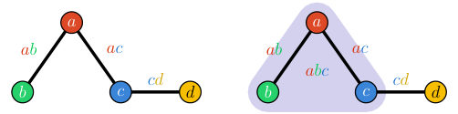
<figcaption class="paper-figure-caption"><b>Fig 1.</b> FIG. 4. Hypergraphs of (a) ab+ac+cd and (b) ab+ac+cd+ abc. Both describe the same link class, since abc is redundant, but only in (b) is {a, b, c} GME after cutting d. Two-ring monomials are drawn as lines and the three-ring monomial abc as a shaded region.</figcaption>
</figure>
</div>
<p><strong>Summary.</strong> This paper establishes a deep connection between the topology of linked rings and the entanglement structure of qudit quantum states. By recasting link polynomials into hypergraphs, the authors derive explicit formulas for states that realize any desired entanglement pattern upon particle loss. This work proves the existence of highly robust, $m$-resistant entangled states, advancing the theory of quantum network resource quantification.</p>
<p><strong>Why it may be interesting.</strong> This work provides a powerful, concrete mathematical framework connecting topological invariants (link theory) directly to fundamental quantum resource properties (multipartite entanglement), which is highly relevant for designing robust quantum communication protocols.</p>
<details>
<summary>Detailed structure</summary>
<p><strong>Main problem.</strong> To provide an explicit construction for pure qudit states that realize any given pattern of multipartite entanglement defined by link classes, and to characterize which entangled subsets are genuinely multipartite entangled.</p>
<p><strong>Main result.</strong> The authors provide an explicit formula for pure qudit states corresponding to any link class, proving that the entanglement pattern (linked subsets vs. GME subsets) is precisely controlled by the underlying hypergraph structure.</p>
<p><strong>Method.</strong> The core method involves recasting link polynomials into hypergraphs and constructing the quantum state as a superposition over the hyperedges of this graph structure.</p>
<p><strong>Model / system.</strong> The system is multipartite entanglement in qudits, modeled using an analogy to linked rings. The entanglement structure is mathematically encoded by a hypergraph derived from the link polynomial.</p>
<p><strong>Key observables.</strong> Link class (defined by polynomial), entanglement pattern upon particle loss, and the degree of genuine multipartite entanglement (GME) for reduced density matrices $\rho_S$.</p>
<p><strong>Important parameters / regimes.</strong> The number of particles ($N$), the resistance level ($m$), and the structure of the hypergraph $g=(V,E)$.</p>
<p><strong>Assumptions / limitations.</strong> The construction assumes that the local dimension of the qudits is large enough to support the necessary superposition structure for all hyperedges.</p>
<p><strong>Figures summary.</strong> Figures illustrate the mapping between link classes (e.g., Hopf link) and their corresponding hypergraphs, showing how the structure dictates entanglement properties.</p>
<p><strong>Paper structure.</strong> The paper establishes the link between link polynomials and hypergraphs, then constructs the state $|\mathbf{g}\rangle$ based on this hypergraph. It proves two key theorems: one linking entanglement to graph connectivity, and another linking GME to the hyperedges themselves. Finally, it applies this to prove the existence of $m$-resistant states.</p>
</details>
<details>
<summary>Abstract</summary>
<p>Links of rings offer an intuitive picture of multipartite entanglement. Cutting one ring can free some of the others, just as losing a particle, i.e. tracing it out, can disentangle some of the remaining ones. This analogy classifies multipartite entanglement according to which groups of particles stay entangled when others are lost, a question at the heart of robust quantum networks. However, pure states realizing a given link class were known only in special cases. Here, we close this gap. Recasting link polynomials as hypergraphs, we give an explicit formula for pure qudit states and prove that, for every link class, their entanglement under any pattern of particle loss matches the link exactly. The same construction also controls genuine multipartite entanglement, determining exactly which of the groups that stay entangled are genuinely multipartite entangled, and all of them can be made so. As a consequence, we prove the conjecture that $m$-resistant pure qudit states, which stay entangled after the loss of any $m$ particles but become fully separable after the loss of $m+1$, exist for any number of particles and any $m$.</p>
</details>
<p><sub><a href="#top">↑ back to top</a></sub></p>

<p><a id="paper-2610.35513"></a></p>
<h3 id="geometric-aspects-of-fault-tolerance"><a href="http://arxiv.org/abs/2610.35513v1">Geometric aspects of fault tolerance</a></h3>
<p><strong>Authors:</strong> Jonathan Conrad<br>
<strong>Type:</strong> theory · <strong>Category:</strong> quantum information and computing · <strong>PDF:</strong> <a href="https://arxiv.org/pdf/2610.35513v1">https://arxiv.org/pdf/2610.35513v1</a><br>
<strong>Analysis basis:</strong> full PDF text, analyzed in chunks</p>
<div class="figure-strip-hint">↔ Scroll figures horizontally</div>
<div class="paper-figures-scroll">
<figure class="paper-figure-card">
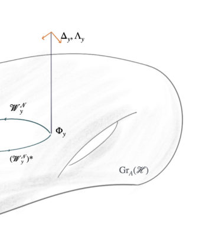
<figcaption class="paper-figure-caption"><b>Fig 1.</b> Figure 1: Illustration of the Grassmannian bundle. The total space is the framed Grass- mannian GrA(H) consisting of triples (Φ, ∆, Λ) that project to Φ on the base space. We illustrate Theorem 1.5, where jointly correctable errors E, N isometrically transport be- tween the code idempotents Φx, Φy and the error-space idempotent ΦE x.</figcaption>
</figure>
</div>
<p><strong>Summary.</strong> This paper provides a sophisticated geometric framework for understanding quantum error correction, reformulating fault tolerance using fiber bundles and flat connections. It applies this theory to GKP codes, demonstrating that their structure is governed by embeddings into Grassmannians. Ultimately, it connects this abstract theory to the concrete construction of magic states using mathematical objects derived from Riemann surfaces.</p>
<p><strong>Why it may be interesting.</strong> The deep geometric connection between error correction (a QEC topic) and differential geometry (flat connections) provides powerful new mathematical tools for analyzing the robustness of quantum computation.</p>
<details>
<summary>Detailed structure</summary>
<p><strong>Main problem.</strong> The paper develops a geometric understanding of fault tolerance in quantum information processing by reformulating error correction using fiber bundle theory.</p>
<p><strong>Main result.</strong> It shows that a generalization of the Knill-Laflamme conditions implies a flat connection on the associated operator-algebraic fiber bundle, and it constructs specific magic states using GKP codes associated with Jacobians.</p>
<p><strong>Method.</strong> The methodology combines operator algebras, differential geometry (fiber bundles, Grassmannians), and advanced techniques from the theory of theta functions and Riemann surfaces.</p>
<p><strong>Model / system.</strong> The focus is on quantum error correcting codes, particularly Gottesman-Kitaev-Preskill (GKP) codes. The mathematical framework involves defining code spaces via idempotents and analyzing their structure on a Grassmannian bundle.</p>
<p><strong>Key observables.</strong> The existence of a flat connection, the overlap between code frames, and the explicit construction of magic states (e.g., CCZ-type).</p>
<p><strong>Important parameters / regimes.</strong> The structure of the underlying Riemann surface (e.g., elliptic curves, Klein quartic), and the associated lattice parameters.</p>
<p><strong>Assumptions / limitations.</strong> The analysis extends previous work from unitary dynamics to general quantum channels, and specific results rely on the holomorphic nature of automorphisms on Riemann surfaces.</p>
<p><strong>Figures summary.</strong> Figure 1 illustrates the Grassmannian bundle, demonstrating how jointly correctable errors transport between code idempotents.</p>
<p><strong>Paper structure.</strong> The paper progresses by first establishing the operator-algebraic fiber bundle framework for fault tolerance, then applying this to GKP codes whose moduli space embeds into a Grassmannian, and finally deriving specific magic states from Jacobians of Riemann surfaces.</p>
</details>
<details>
<summary>Abstract</summary>
<p>We highlight three geometric aspects of fault tolerance. First, we construct an operator-algebraic formulation of the fiber bundle framework for fault tolerance, and show that a generalization of the Knill-Laflamme conditions implies a flat connection for this framework. Next, we develop this framework for Gottesman-Kitaev-Preskill (GKP) codes. We show that, for each polarization type, their moduli space embeds smoothly into a Grassmannian of finite-dimensional subspaces of a regularized distribution space. Finally, we explain how GKP codes associated with Jacobians give rise to magic states that can be obtained by code space projections of Gaussian states and identify a $\rm CCZ$-type magic state arising this way.</p>
</details>
<p><sub><a href="#top">↑ back to top</a></sub></p>

<p><a id="paper-2610.34615"></a></p>
<h3 id="higher-order-otocs-in-chaotic-quantum-maps-ruelle-pollicott-resonances-and-asymptotic-freeness"><a href="http://arxiv.org/abs/2610.34615v1">Higher Order OTOCs in Chaotic Quantum Maps: Ruelle-Pollicott Resonances and Asymptotic Freeness</a></h3>
<p><strong>Authors:</strong> Nicolás Gómez Brucks, Ignacio García-Mata, Diego A. Wisniacki<br>
<strong>Type:</strong> theory · <strong>Category:</strong> statistical mechanics · <strong>PDF:</strong> <a href="https://arxiv.org/pdf/2610.34615v1">https://arxiv.org/pdf/2610.34615v1</a><br>
<strong>Analysis basis:</strong> full PDF text, analyzed in chunks</p>
<div class="figure-strip-hint">↔ Scroll figures horizontally</div>
<div class="paper-figures-scroll">
<figure class="paper-figure-card">
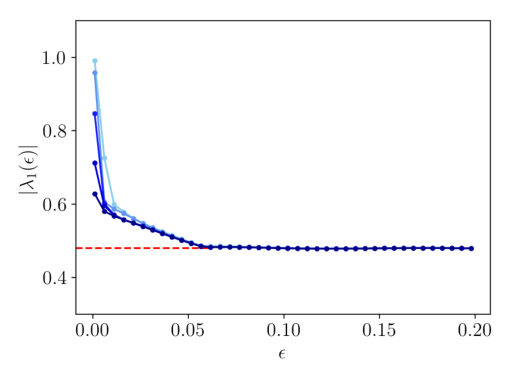
<figcaption class="paper-figure-caption"><b>Fig 1.</b> Figure 1. Modulus of the leading resonance λ1 of the coarse- grained superoperator as a function of the coarse-graining pa- rameter ϵ for the Harper map at KH = 0.87. The curves cor- respond to Hilbert space dimensions d = 500, 1000, 2000, 3000 and d = 4000, represented by progressively darker shades of blue. The dashed red line represents the mean value of λ1 taken on a suitable interval where it stays constant, averaged over all Hilbert space dimensions.</figcaption>
</figure>
<figure class="paper-figure-card">
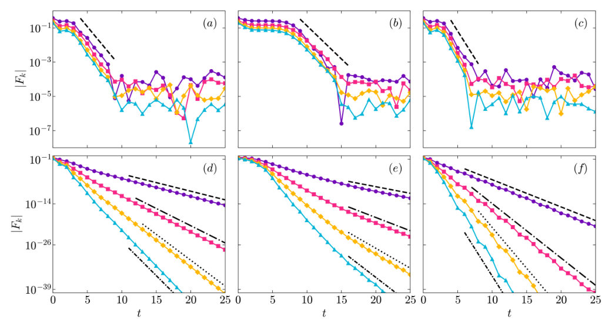
<figcaption class="paper-figure-caption"><b>Fig 2.</b> Figure 2. Exponential decay of even-order OTOCs under unitary (top row) and coarse-grained evolution (bottom row) for ϵ = 0.1. From left to right, the columns show the standard map (KS = 11.87), the perturbed Arnold’s cat map (KA = 0.023), and the Harper map (KH = 0.87). All panels display Fk(t) for P(t)P and d = 5000: F2 (purple circles), F4 (pink squares), F6 (yellow diamonds), and F8 (cyan triangles). Dashed lines in panels (a)-(c) indicate the Ruelle-Pollicott decay ∝|λ1|2t; in panels (d)-(f), dashed, dash-dotted, dotted, and short dash-dotted lines indicate ∝|λ1|kt for k = 2, 4, 6, and 8, respectively. The leading resonance moduli are |λ1| ≈0.57, 0.64, and 0.48 for the standard,...</figcaption>
</figure>
<figure class="paper-figure-card">
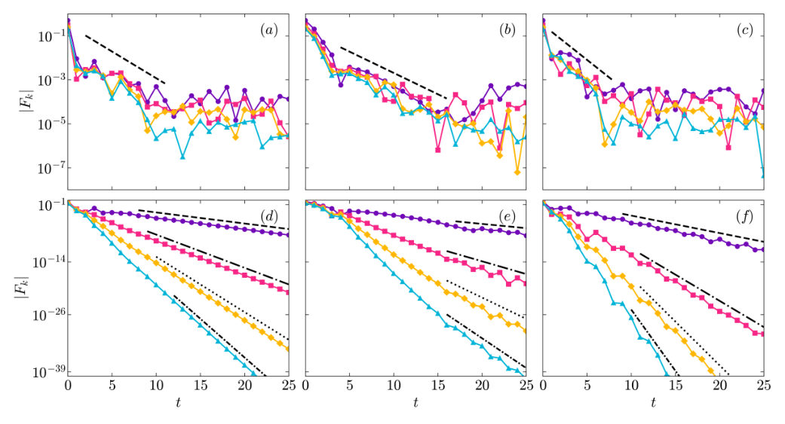
<figcaption class="paper-figure-caption"><b>Fig 3.</b> Figure 3. Exponential decay of odd-order correlators under unitary (top row) and coarse-grained evolution (bottom row) for ϵ = 0.1. From left to right, the columns show the standard map (KS = 11.87), the perturbed Arnold’s cat map (KA = 0.023), and the Harper map (KH = 0.87). All panels display Fk(t) for P(t)P and d = 5000: F1 (purple circles), F3 (pink squares), F5 (yellow diamonds), and F7 (cyan triangles). Dashed lines in panels (a)-(c) indicate the Ruelle-Pollicott decay ∝|λ1|t; in panels (d)-(f), dashed, dash-dotted, dotted, and short dash-dotted lines indicate ∝|λ1|kt for k = 1, 3, 5, and 7, respectively. The leading resonance moduli are |λ1| ≈0.57, 0.64, and 0.48 for the standard,...</figcaption>
</figure>
<figure class="paper-figure-card">
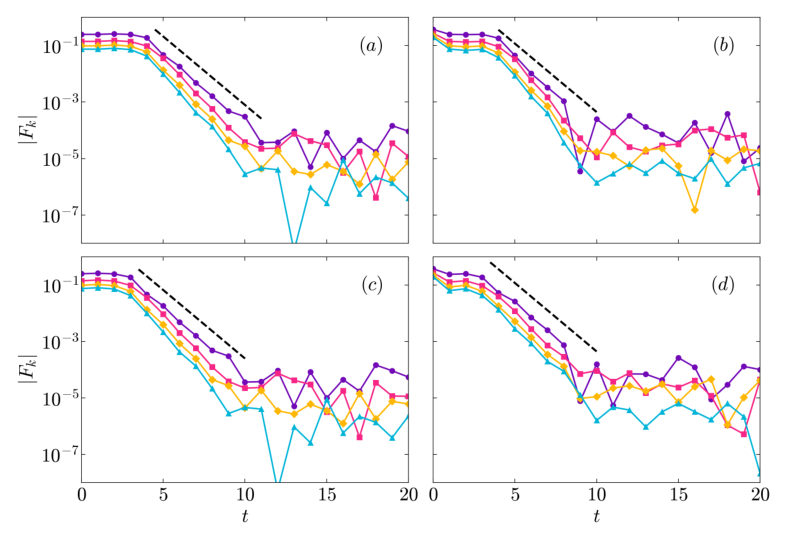
<figcaption class="paper-figure-caption"><b>Fig 4.</b> Figure 4. Comparison of even-order OTOCs for the four different combinations of operators X and P for the standard map at KS = 11.87, d = 5000. Panels (a)–(d) show the results for X(t)P, X(t)X, P(t)X and P(t)P, respectively. Each panel shows the OTOCs F2 (purple circles), F4 (pink squares), F6 (yellow diamonds) and F8 (cyan triangles). The dashed black lines indicate the common intermediate-time decay ∝|λ1|2t, where |λ1| ≈0.57.</figcaption>
</figure>
<figure class="paper-figure-card">
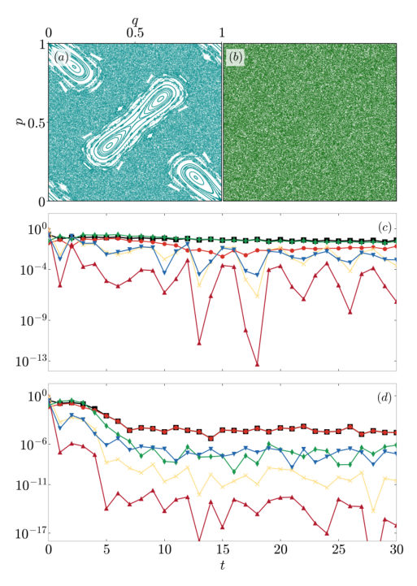
<figcaption class="paper-figure-caption"><b>Fig 5.</b> Figure 6. Phase portraits (top) and free-cumulant decomposi- tion of the 4-OTOC (bottom) for the Harper map. The phase portraits and the corresponding free cumulant decomposition are shown for KH = 0.37 (panels (a) and (c), mixed phase space) and KH = 0.87 (panels (b) and (d), fully chaotic). The black squares correspond to the 4-OTOC. The colored curves correspond to the terms of the decomposition: κ8 (red circles), 4κ2 4 (green diamonds), 8κ2κ6 (blue, downward tri- angles), 28κ2 2κ4 (yellow crosses), and 14κ4 2 (crimson, upward triangles). The operator chosen is P(t)P, for Hilbert space dimension d = 5000.</figcaption>
</figure>
</div>
<p><strong>Summary.</strong> This paper analyzes higher-order OTOCs in chaotic quantum maps to study information scrambling. It finds that the decay rates are governed by the parity of the order, and that the system eventually reaches a state of asymptotic freeness. This work highlights the utility of free probability theory in characterizing quantum chaos dynamics.</p>
<p><strong>Why it may be interesting.</strong> The connection between quantum chaos diagnostics (OTOCs) and the mathematical framework of free probability theory, particularly the emergence of freeness, provides deep insights into the thermalization and scrambling dynamics of quantum many-body systems.</p>
<details>
<summary>Detailed structure</summary>
<p><strong>Main problem.</strong> The paper investigates higher-order Out-of-Time-Ordered Correlators (OTOCs) to diagnose information scrambling and chaos in quantum systems.</p>
<p><strong>Main result.</strong> The decay rates of $k$-OTOCs in the intermediate-time regime depend only on the parity of the order, and at long times, the system exhibits asymptotic freeness characterized by free cumulants.</p>
<p><strong>Method.</strong> The analysis uses numerical investigation of $k$-OTOCs, comparing unitary evolution with coarse-grained evolution simulating decoherence, and employing free probability theory.</p>
<p><strong>Model / system.</strong> The study focuses on quantum maps (like the Standard Map or Harper Map) defined on the torus, which serve as prototypical one-body systems with a well-defined classical chaotic limit.</p>
<p><strong>Key observables.</strong> Higher-order OTOCs ($k$-OTOCs), free cumulants ($\kappa_{2k}$), and the leading Ruelle-Pollicott resonance ($\lambda_1$).</p>
<p><strong>Important parameters / regimes.</strong> Intermediate time regime, long time limit, parity of the order $k$, and the coarse-graining parameter $\epsilon$.</p>
<p><strong>Assumptions / limitations.</strong> The analysis assumes that the system dynamics can be effectively described by the leading Ruelle-Pollicott resonances in the classical limit, and that the coarse-graining procedure correctly models environmental decoherence.</p>
<p><strong>Figures summary.</strong> Figures show exponential decay of even-order OTOCs related to the leading resonance, and plots confirm the scaling of free cumulant saturation values inversely with the Hilbert space dimension ($d^{-1}$).</p>
<p><strong>Paper structure.</strong> The paper progresses by introducing OTOCs and quantum maps, analyzing the intermediate-time decay rates relative to classical resonances, then introducing decoherence to restore expected scaling, and finally demonstrating the emergence of asymptotic freeness via free cumulants at long times.</p>
</details>
<details>
<summary>Abstract</summary>
<p>Out-of-time-ordered correlators (OTOCs) measure the scrambling of information and are a powerful diagnostic of chaos. In chaotic quantum systems with a classical analog, their relaxation towards equilibrium is dictated by the classical Ruelle--Pollicott resonances. We investigate higher-order OTOCs in quantum maps, prototypical one-body systems with a classical limit showing all the essential features of chaotic dynamics. We demonstrate numerically that in the intermediate-time regime they decay exponentially at a rate that depends only on the parity of the order: odd-order OTOCs decay at the same rate as classical correlations, given by the leading Ruelle--Pollicott resonance, and even-order ones at twice that rate. Both are far slower than the naive expectation, under which the rate would grow in proportion to the order. We then mimic the effect of an environment by defining a coarse-grained superoperator whose effect is to introduce decoherence into the system, and find that the expected proportionality between rate and order is thereby restored. Finally, we show that at long times each higher-order OTOC becomes dominated by a single free cumulant, whose saturation value falls off inversely with the dimension of the Hilbert space, signalling the emergence of asymptotic freeness and highlighting the relevance of free probability theory as a framework for the study of quantum chaos.</p>
</details>
<p><sub><a href="#top">↑ back to top</a></sub></p>

<p><a id="paper-2610.33347"></a></p>
<h3 id="junction-hook-errors-in-the-color-code"><a href="http://arxiv.org/abs/2610.33347v1">Junction Hook Errors in the Color Code</a></h3>
<p><strong>Authors:</strong> Salahedeen Issa, Margaret Martonosi<br>
<strong>Type:</strong> theory · <strong>Category:</strong> quantum information and computing · <strong>PDF:</strong> <a href="https://arxiv.org/pdf/2610.33347v1">https://arxiv.org/pdf/2610.33347v1</a><br>
<strong>Analysis basis:</strong> full PDF text, analyzed in chunks</p>
<div class="figure-strip-hint">↔ Scroll figures horizontally</div>
<div class="paper-figures-scroll">
<figure class="paper-figure-card">
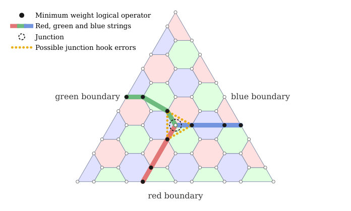
<figcaption class="paper-figure-caption"><b>Fig 1.</b> Figure 1: An example of a junction hook error on the d = 9 triangular color code. The black dots form a minimum weight logical operator, which consists of a red, a green and a blue string. Each string begins on the boundary of its own color, and the three strings meet at the junction (dashed circle). The junction is a data qubit that does not belong to the logical operator but whose three neighbors do. These strings are all either perpendicular or “nearly” perpendicular to the boundary of the same color. The junction lies on one stabilizer of each color, and has two neighbors on each stabilizer that both lie on the minimum weight logical operator. A hook error on these two data qubits is...</figcaption>
</figure>
<figure class="paper-figure-card">
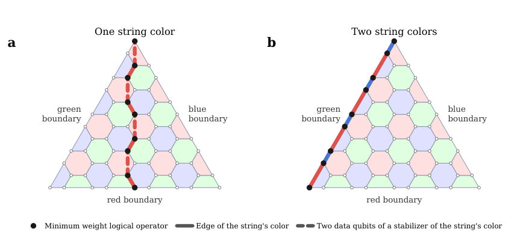
<figcaption class="paper-figure-caption"><b>Fig 2.</b> Figure 2: Minimum weight logical operators do not necessarily involve strings of all three colors, as shown here on the d = 9 triangular color code. A string advances in one of two ways: along an edge of its own color (solid), or across a stabilizer of its own color, through two of that stabilizer’s data qubits (dashed). Both are oriented perpendicular or nearly perpendicular to the boundary of the string’s color. (a) A red string that runs from the red boundary into the top corner, where the green and blue boundaries meet. It alternates between red edges and pairs of data qubits on red stabilizers, and ends on the corner data qubit, which belongs only to the red corner stabilizer, so the...</figcaption>
</figure>
<figure class="paper-figure-card">
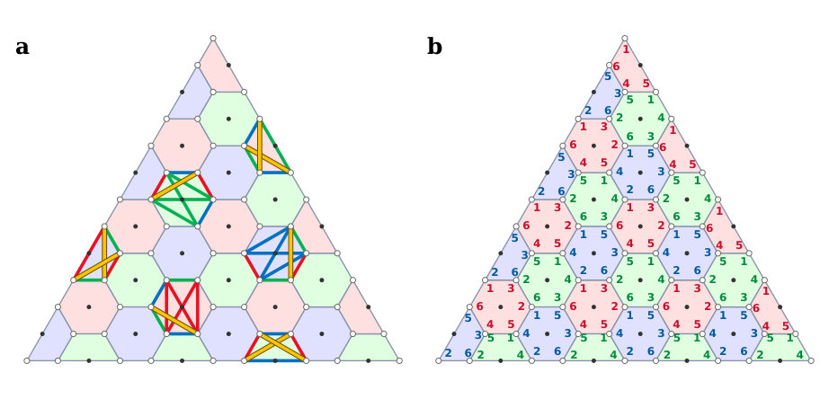
<figcaption class="paper-figure-caption"><b>Fig 3.</b> Figure 3: Malign hook errors and the schedule of Ref. [1], drawn on the d = 9 triangular color code in the layout of Fig. 1 of Ref. [1]. (a) Fig. 1(a) of Ref. [1], with the junction hook errors added in yellow. As in Ref. [1], the red, green and blue pairs are the single-color malign pairs, shown for one bulk hexagonal stabilizer and one weight-4 boundary stabilizer of each color, and colored according to the type of anyon for which they would provide a shortcut. On each hexagonal stabilizer, the yellow pair joins the ends of the two strings whose colors differ from that of the stabilizer. On the weight-4 stabilizers, both diagonals are shown in yellow. They differ by the stabilizer itself...</figcaption>
</figure>
<figure class="paper-figure-card">
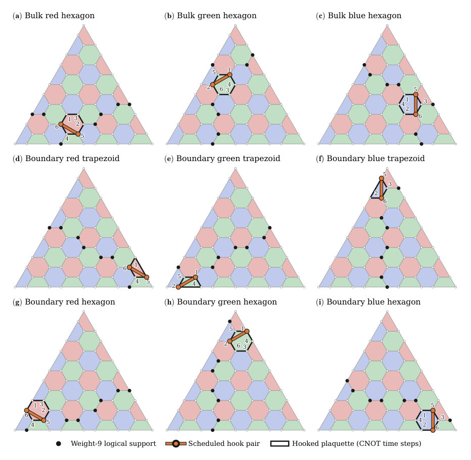
<figcaption class="paper-figure-caption"><b>Fig 4.</b> Figure 4: A junction hook error on every type of non-corner stabilizer under the schedule of Ref. [1], shown here at d = 9: (a–c) bulk stabilizers, (d–f) weight-4 boundary stabilizers, and (g–i) weight-6 boundary stabilizers. In each panel, the numbers beside the corners of the outlined stabilizer give the CNOT ordering from the schedule. A weight-2 hook error occurs on the data qubits at positions (1, 2) or (5, 6) of a weight-6 stabilizer, and on the last two data qubits of a weight-4 stabilizer, which is equivalent up to the stabilizer to the first two; panel (e) shows the first two, which form the junction pair. Each panel shows a minimum weight logical operator containing the hook...</figcaption>
</figure>
</div>
<p><strong>Summary.</strong> This paper introduces 'junction hook errors,' a new type of correlated error in the triangular color code that reduces its effective distance. The authors demonstrate that these errors are not captured by prior analyses and necessitate strengthening the error correction protocol. This finding is crucial for building robust quantum computers based on topological codes.</p>
<p><strong>Why it may be interesting.</strong> This work directly advances the theoretical understanding of fault-tolerance in topological quantum computing codes by identifying systematic weaknesses in existing error correction schedules.</p>
<details>
<summary>Detailed structure</summary>
<p><strong>Main problem.</strong> The paper identifies a novel class of distance-reducing errors in the triangular color code called 'junction hook errors,' which were missed by previous error classification schemes.</p>
<p><strong>Main result.</strong> The existence of junction hook errors implies that the previously proposed syndrome extraction schedule is insufficient, requiring additional protection (like flag qubits) to restore the full circuit-level distance.</p>
<p><strong>Method.</strong> The authors analyze the structure of the color code, specifically examining how junction hook errors provide shortcuts for two different colored anyon strings meeting at a junction point.</p>
<p><strong>Model / system.</strong> The study uses the 2D triangular color code, a topological quantum error correction code, where logical operations are represented by colored string paths (red, green, blue) meeting at junctions.</p>
<p><strong>Key observables.</strong> Circuit-level distance, undetectable logical errors, and the specific structure of junction hook errors occurring at junctions.</p>
<p><strong>Important parameters / regimes.</strong> Code distance $d$, and specific values tested for $d$ include 7, 9, and 11.</p>
<p><strong>Assumptions / limitations.</strong> The analysis builds upon existing work on color-dependent syndrome extraction schedules but assumes the necessity of accounting for junction-specific errors.</p>
<p><strong>Figures summary.</strong> Figures illustrate junction hook errors on the $d=9$ code, showing the meeting of three colored strings at a junction, and comparing the error location to minimum weight logical operators.</p>
<p><strong>Paper structure.</strong> The paper introduces the concept of junction hook errors, proves their existence by showing they cause undetectable logical errors for specific distances, and discusses the implications for maintaining the full circuit-level distance.</p>
</details>
<details>
<summary>Abstract</summary>
<p>Color-dependent syndrome extraction schedules have been proposed to mitigate hook errors in the triangular color code. Recent work by Kishony and Fowler (arXiv:2603.28852) identifies distance-reducing hook errors by the type of anyon for which they provide a shortcut and chooses the CNOT ordering for stabilizers of each color to avoid these errors. We identify an additional class of distance-reducing hooks, which we call junction hook errors, that is not captured by this classification. The two data qubits of a junction hook error terminate anyon strings of two different colors at the point where the three colored strings of a logical operator meet, which we call the junction. As such, the hook error does not correspond to a single type of anyon, yet it still reduces the distance. For distances $d=7,9,11$, we verify that every non-corner plaquette admits a scheduled hook error that, together with $d-2$ single data qubit faults, produces an undetectable logical error using $d-1$ faults. Each of these is a junction hook error. Because of this, every stabilizer, including those in the bulk, still requires additional protection from hook errors (such as flag qubits) to restore the full circuit-level distance with this schedule. A minimum weight logical operator has at most one junction, however, so junction hook errors cannot accumulate on one minimum weight logical operator in the way that single-color malign hook errors can. This helps explain why the schedule still improves the circuit-level distance to $d-\lfloor (d+3)/6\rfloor$, rather than the $d/2$ distance associated with spatially uniform color code scheduling.</p>
</details>
<p><sub><a href="#top">↑ back to top</a></sub></p>

<p><a id="paper-2610.34841"></a></p>
<h3 id="large-language-models-for-quantum-code-translation-an-exploratory-study"><a href="http://arxiv.org/abs/2610.34841v1">Large Language Models for Quantum Code Translation: An Exploratory Study</a></h3>
<p><strong>Authors:</strong> Xiyuan Li, Yuechen Li, Jianjun Zhao<br>
<strong>Type:</strong> experiment · <strong>Category:</strong> quantum information and computing · <strong>PDF:</strong> <a href="https://arxiv.org/pdf/2610.34841v1">https://arxiv.org/pdf/2610.34841v1</a><br>
<strong>Analysis basis:</strong> full PDF text, analyzed in chunks</p>
<div class="figure-strip-hint">↔ Scroll figures horizontally</div>
<div class="paper-figures-scroll">
<figure class="paper-figure-card">
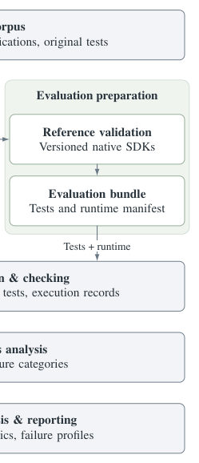
<figcaption class="paper-figure-caption"><b>Fig 1.</b> Fig. 1. Workflow for LLM-based quantum code translation.</figcaption>
</figure>
<figure class="paper-figure-card">
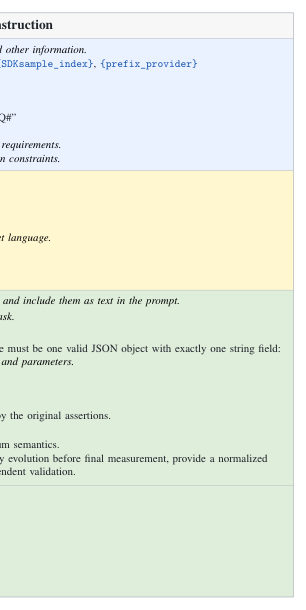
<figcaption class="paper-figure-caption"><b>Fig 2.</b> Fig. 2. Prompt construction process and content used in the translation experiments.</figcaption>
</figure>
<figure class="paper-figure-card">
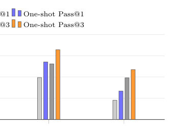
<figcaption class="paper-figure-caption"><b>Fig 3.</b> Fig. 3. Zero-shot versus one-shot prompts over the same 43 tasks. PL: PennyLane; QS: Q#.</figcaption>
</figure>
</div>
<p><strong>Summary.</strong> This paper explores using Large Language Models (LLMs) to automate the difficult process of translating quantum code between different SDKs. By developing a quantum-aware workflow and testing various LLM prompts, the authors demonstrate promising initial success rates in code translation. This work suggests LLMs could significantly lower the barrier to entry for cross-platform quantum software development.</p>
<p><strong>Why it may be interesting.</strong> While focused on software tools, the underlying challenge of formalizing and translating quantum semantics into executable code is crucial for advancing any physical quantum simulation or hardware control.</p>
<details>
<summary>Detailed structure</summary>
<p><strong>Main problem.</strong> Quantum software development is hindered by quantum-mechanical semantics and fragmented Software Development Kits (SDKs), making cross-SDK code translation difficult.</p>
<p><strong>Main result.</strong> LLMs show potential for quantum code translation, achieving zero-shot Pass@1 up to 72.33%, with one-shot prompting providing substantial improvements.</p>
<p><strong>Method.</strong> The authors propose and evaluate a quantum-aware translation workflow using LLMs, testing translation of executable programs between SDKs like Qiskit, PennyLane, and Q#.</p>
<p><strong>Model / system.</strong> The focus is on quantum computation, specifically translating quantum circuits and programs between different high-level quantum SDKs.</p>
<p><strong>Key observables.</strong> Zero-shot and one-shot Pass@1/Pass@3 scores, failure categories (e.g., missing source artifacts, SDK compilation errors), and translation effectiveness.</p>
<p><strong>Important parameters / regimes.</strong> The benchmark uses 43 tasks across multiple LLM configurations (GPT, DeepSeek, GLM) and target SDKs.</p>
<p><strong>Assumptions / limitations.</strong> The study is a pilot evaluation, and future work must address the rapid evolution of quantum programming frameworks and develop semantic preservation metrics.</p>
<p><strong>Figures summary.</strong> Figure 1 summarizes the LLM-based quantum code translation workflow; Figure 2 illustrates the prompt construction process; and subsequent figures/tables compare zero-shot vs. one-shot performance across different models and targets.</p>
<p><strong>Paper structure.</strong> The paper introduces the problem, details the quantum-aware LLM translation workflow and prompt engineering, presents pilot evaluation results across multiple models and tasks, and concludes with future work directions.</p>
</details>
<details>
<summary>Abstract</summary>
<p>Quantum software development is challenged by quantum-mechanical semantics and fragmented software development kits (SDKs), which complicate cross-SDK code translation and execution. In this paper, we propose an LLM-based approach for translating executable programs between high-level quantum SDKs. We develop a quantum-aware translation workflow whose prompt design and validation reflect quantum semantics and accommodate the version evolution of quantum ecosystems. We conduct a preliminary evaluation of 4 LLM configurations on 43 tasks, translating Qiskit programs to PennyLane and Q#. LLMs achieve a zero-shot Pass@1 of up to 72.33%, while one-shot prompting further improves the translation effectiveness. These results suggest potential for quantum code translation by LLMs.</p>
</details>
<p><sub><a href="#top">↑ back to top</a></sub></p>

<p><a id="paper-2610.34784"></a></p>
<h3 id="measure-of-set-coherence"><a href="http://arxiv.org/abs/2610.34784v1">Measure of set coherence</a></h3>
<p><strong>Authors:</strong> Jiabo Panel, Yu Guo, Yuqin Wang<br>
<strong>Type:</strong> theory · <strong>Category:</strong> quantum information and computing · <strong>PDF:</strong> <a href="https://arxiv.org/pdf/2610.34784v1">https://arxiv.org/pdf/2610.34784v1</a><br>
<strong>Analysis basis:</strong> full PDF text, analyzed in chunks</p>
<div class="figure-strip-hint">↔ Scroll figures horizontally</div>
<div class="paper-figures-scroll">
<figure class="paper-figure-card">
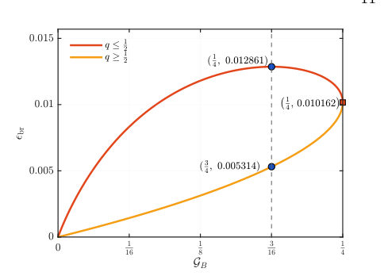
<figcaption class="paper-figure-caption"><b>Fig 1.</b> FIG. 2. The relation between the broadcasting deficit and the total Bargmann gap for ⃗ρ in Eq. (31). The two branches corre- spond to squared overlaps q ⩽1/2 and q ⩾1/2, respectively. The two blue dots (3/16, 0.012861) and (3/16, 0.005314) high- light ϵbr,∓with the same GB = 3/16, corresponding to q = 1/4 and q = 3/4, respectively. The broadcasting deficit attains its maximum at q = 1/4, whereas the two branches meet at GB = 1/4, corresponding to q = 1/2 and ϵbr ≈0.010162. The interval (0.010162, 0.012861) of ϵbr,−corresponds to α ∈ (π/4, π/3), i.e., q ∈(1/4, 1/2).</figcaption>
</figure>
<figure class="paper-figure-card">
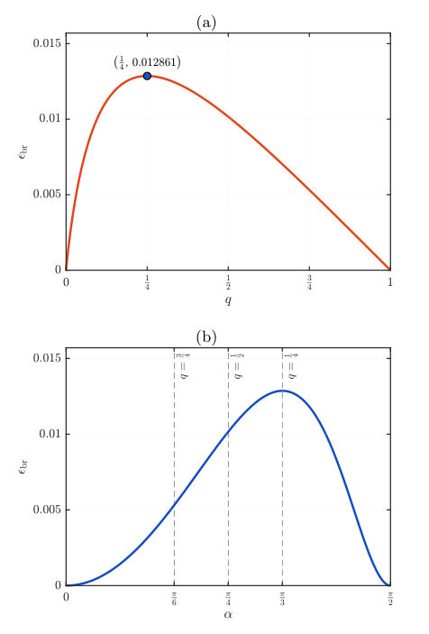
<figcaption class="paper-figure-caption"><b>Fig 2.</b> FIG. 1. (a) The corresponding broadcasting deficit εbr = 1−g2 as a function of the squared overlap q = |⟨ψ1|ψ2⟩|2. εbr reaches a maximum at q = 1</figcaption>
</figure>
<figure class="paper-figure-card">
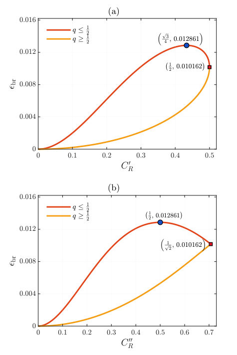
<figcaption class="paper-figure-caption"><b>Fig 3.</b> FIG. 3. Broadcasting deficit ϵbr as a function of (a) the mean robustness C′ R and (b) the max robustness C′′ R. The two analytic branches ϵbr,−and ϵbr,+ correspond to q ⩽1/2 and q ⩾1/2, respectively. The marked blue dots indicate the maximum broadcasting deficit at q = 1/4.</figcaption>
</figure>
</div>
<p><strong>Summary.</strong> This work introduces a resource theory for 'set coherence,' a measure quantifying how far a set of quantum states is from being simultaneously diagonalizable. By establishing an axiomatic framework, the authors rigorously test various candidate measures, proving that certain constructions, like the sum robustness, satisfy the necessary mathematical criteria for a robust quantifier.</p>
<p><strong>Why it may be interesting.</strong> The development of a resource theory for set coherence provides a powerful, generalized tool for quantifying non-classical correlations in multi-state systems, which is crucial for understanding tasks like quantum broadcasting.</p>
<details>
<summary>Detailed structure</summary>
<p><strong>Main problem.</strong> The paper develops a systematic resource theory for 'set coherence,' quantifying whether a collection of quantum states fails to be simultaneously incoherent in a common basis.</p>
<p><strong>Main result.</strong> It establishes an axiomatic framework for Set-Coherence Measures (SCMs) and compares various robustness-based quantifiers, finding that the sum robustness and Schatten p-norm based measures are complete and strongly superadditive.</p>
<p><strong>Method.</strong> The authors use axiomatic definitions derived from the free operations of set coherence (which are common commutativity-preserving quantum channels) to categorize and test candidate coherence measures.</p>
<p><strong>Model / system.</strong> The study analyzes sets of quantum states, $\vec{
ho} = \{
ho_j\}$, acting on a Hilbert space $H$. It relates set coherence to the ability to perfectly broadcast the set of states, drawing parallels to single-state coherence measures.</p>
<p><strong>Key observables.</strong> Set coherence, various robustness measures ($C'_R, C''_R$), and the performance of approximate quantum broadcasting.</p>
<p><strong>Important parameters / regimes.</strong> The dimension of the Hilbert space ($d \ge 2$), and the structure of the set of states $\vec{
ho}$.</p>
<p><strong>Assumptions / limitations.</strong> The framework assumes that the free operations of set coherence are common commutativity-preserving quantum channels, leading to the axiomatic definition of SCMs.</p>
<p><strong>Figures summary.</strong> Not specified.</p>
<p><strong>Paper structure.</strong> The paper first defines set coherence and establishes the axiomatic framework for SCMs. It then investigates and compares several robustness-based measures (average, maximum, sum) against these axioms. Finally, it proposes and analyzes specific classes of SCMs, including those based on Schatten norms and the Bargmann gap.</p>
</details>
<details>
<summary>Abstract</summary>
<p>Set coherence is a quantum resource for a set of states that characterizes whether a collection of quantum states contains coherence, namely whether these states fail to be simultaneously incoherent in a common basis. In this work, we show that the free operations of set coherence are common commutativity-preserving quantum channels, from which we then establish an axiomatic framework for set-coherence measure (SCM). Within this framework, we investigate the robustness based measures deduced by taking, respectively, the average, maximum, and sum of the single-state robustnesses over a common reference basis, where the first two were previously introduced in the literature and we check here whether they satisfy our SCM axioms. Consequently, we show that the averaged robustness is an SCM but it is neither unified nor complete, the maximal robustness is a unified SCM but is neither complete nor strongly superadditive, whereas the sum robustness is a complete SCM. Furthermore, we propose several classes of SCMs based on pairwise commutators. We show that the Schatten $p$-norm based SCMs are complete and strongly superadditive. We also find that the universal fourth-order Bargmann gap measure proposed in the literature is a complete and strongly superadditive quantifier of set coherence. Finally, we discuss the operational meaning of the SCM in the context of optimal approximate quantum broadcasting, and show that the amount of set coherence can closely reflect the performance of this task.</p>
</details>
<p><sub><a href="#top">↑ back to top</a></sub></p>

<p><a id="paper-2610.35838"></a></p>
<h3 id="network-nonlocality-with-tripartite-entangled-sources"><a href="http://arxiv.org/abs/2610.35838v1">Network nonlocality with tripartite entangled sources</a></h3>
<p><strong>Authors:</strong> Sudip Chakrabarty, Amit Kundu<br>
<strong>Type:</strong> theory · <strong>Category:</strong> quantum information and computing · <strong>PDF:</strong> <a href="https://arxiv.org/pdf/2610.35838v1">https://arxiv.org/pdf/2610.35838v1</a><br>
<strong>Analysis basis:</strong> full PDF text, analyzed in chunks</p>
<div class="figure-strip-hint">↔ Scroll figures horizontally</div>
<div class="paper-figures-scroll">
<figure class="paper-figure-card">
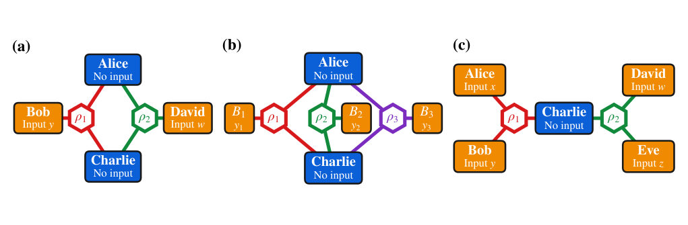
<figcaption class="paper-figure-caption"><b>Fig 1.</b> FIG. 1: Networks with tripartite sources. Hexagons (red, green and purple) are independent sources, each emitting three particles. Blue boxes are central nodes, which perform one fixed measurement. Orange boxes are end nodes, which choose between two dichotomic measurements. (a) Closed network with two sources. The central nodes Alice and Charlie hold one particle from each source, and the end nodes Bob and David hold the third particles. (b) Closed network with three sources and end nodes B1, B2, B3. (c) Open network. The central node Charlie holds one particle from each source, and the other two particles of every source go to two end nodes.</figcaption>
</figure>
<figure class="paper-figure-card">
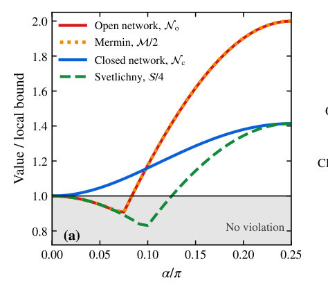
<figcaption class="paper-figure-caption"><b>Fig 2.</b> FIG. 2: (a) Generalized GHZ states. Closed-network value p</figcaption>
</figure>
<figure class="paper-figure-card">
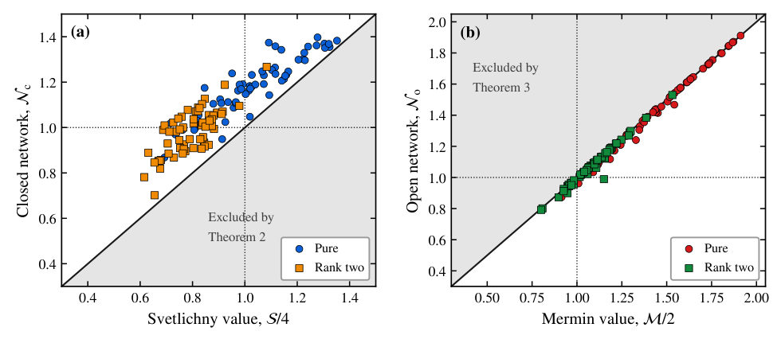
<figcaption class="paper-figure-caption"><b>Fig 3.</b> FIG. 3: Network values against single-copy values for 120 random three-qubit states (sampling described in Appendix G). Blue circles and red circles are pure states, orange squares and green squares are states of rank two. (a) Closed-network value Nc against S/4. All points lie above the black diagonal, as required by Theorem 2. (b) Open-network value No against M/2. All points lie on or below the diagonal, as required by Theorem 3. The plot is a consistency check of the theorems, not evidence for them.</figcaption>
</figure>
<figure class="paper-figure-card">
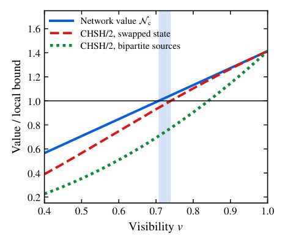
<figcaption class="paper-figure-caption"><b>Fig 4.</b> FIG. 4: Noisy GHZ sources of visibility v. Closed-network value Nc = √</figcaption>
</figure>
<figure class="paper-figure-card">
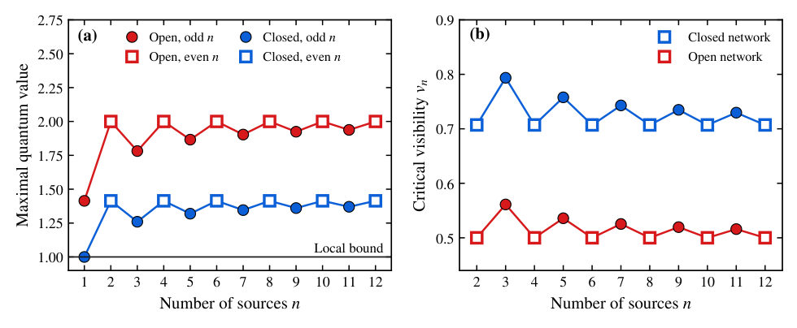
<figcaption class="paper-figure-caption"><b>Fig 5.</b> FIG. 5: Parity effect. (a) Maximal quantum values of the closed-network inequality (blue) and the open-network inequality (red) against the number of sources, from Theorem 4. Filled circles are odd n, open squares are even n, and the black line is the local bound. (b) Critical visibility of noisy GHZ sources for the strategies that attain these maxima, with the same colors and markers.</figcaption>
</figure>
</div>
<p><strong>Summary.</strong> This theoretical work explores the relationship between network nonlocality and single-source nonlocality in quantum networks using tripartite entangled sources. It demonstrates that the specific physical wiring of the network dictates which type of nonlocality violation (Mermin or Svetlichny) is necessary or sufficient for the network to exhibit nonclassical correlations. This has implications for designing robust quantum communication channels.</p>
<p><strong>Why it may be interesting.</strong> It provides a deep structural understanding of how multipartite entanglement resources are utilized and constrained when distributed across a network architecture, which is fundamental to quantum communication protocols.</p>
<details>
<summary>Detailed structure</summary>
<p><strong>Main problem.</strong> The paper investigates how network nonlocality, generated by independent sources emitting tripartite entangled states, relates to single-source nonlocality measures like Mermin and Svetlichny inequalities.</p>
<p><strong>Main result.</strong> The relationship between network nonlocality and single-source nonlocality depends critically on the network wiring: a closed network structure implies a Svetlichny violation leads to a network violation, while an open network requires a Mermin violation.</p>
<p><strong>Method.</strong> The authors analyze network nonlocality by comparing correlation tensors derived from different network topologies (closed vs. open) against established single-source bounds using inequalities.</p>
<p><strong>Model / system.</strong> The model involves quantum networks built from independent sources emitting three-qubit entangled states, with the nonlocality tested across different network architectures (wirings).</p>
<p><strong>Key observables.</strong> Network nonlocality, Mermin inequality violation ($\langle M 
angle$), and Svetlichny inequality violation ($\langle M + M' 
angle$).</p>
<p><strong>Important parameters / regimes.</strong> The number of sources (odd vs. even) and the specific network wiring (closed vs. open).</p>
<p><strong>Assumptions / limitations.</strong> The analysis focuses on comparing network nonlocality to single-copy tests and is restricted to simple wiring configurations.</p>
<p><strong>Figures summary.</strong> Figures illustrate various network topologies (closed/open) using tripartite sources, and tables compare the derived nonlocality values against local bounds.</p>
<p><strong>Paper structure.</strong> The paper systematically compares network nonlocality derived from different wiring schemes (closed vs. open) against the bounds set by single-source entanglement tests (Mermin and Svetlichny), deriving specific mathematical relationships for each case.</p>
</details>
<details>
<summary>Abstract</summary>
<p>Quantum networks are built from independent sources, and their nonlocality has mostly been studied with sources that emit bipartite entangled states. A source of three entangled qubits is richer, since its nonlocality can be tested by the Mermin or the more demanding Svetlichny inequality. We ask how network nonlocality relates to these two single-source notions and find that the answer depends on the wiring. When two central nodes without inputs share every source, Bell-state measurements turn every Svetlichny violation into a network violation, and even all entangled generalised Greenberger-Horne-Zeilinger states violate the network inequality. When a single central node is shared, the relation reverses, and a network violation requires a Mermin violation of the source. With more sources, the maximal violation depends on whether their number is even or odd, and we give tight bounds for both cases. These results show that the way multipartite sources are wired decides which kind of nonlocality a network inherits.</p>
</details>
<p><sub><a href="#top">↑ back to top</a></sub></p>

<p><a id="paper-2610.33524"></a></p>
<h3 id="path-space-large-deviation-on-a-lattice-for-interacting-particle-systems"><a href="http://arxiv.org/abs/2610.33524v1">Path space large deviation on a lattice for interacting particle systems</a></h3>
<p><strong>Authors:</strong> Cristian Giardinà, Tomohiro Sasamoto<br>
<strong>Type:</strong> theory · <strong>Category:</strong> statistical mechanics · <strong>PDF:</strong> <a href="https://arxiv.org/pdf/2610.33524v1">https://arxiv.org/pdf/2610.33524v1</a><br>
<strong>Analysis basis:</strong> full PDF text, analyzed in chunks</p>
<div class="figure-strip-hint">↔ Scroll figures horizontally</div>
<div class="paper-figures-scroll">
<figure class="paper-figure-card">
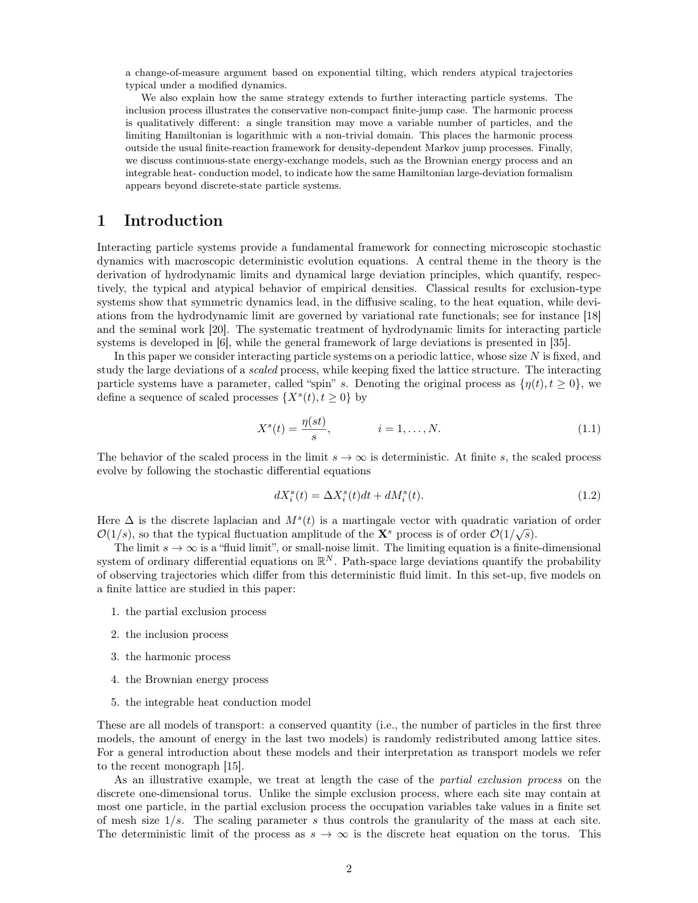
<figcaption class="paper-figure-caption"><b>Fig 1.</b> Low-resolution page preview, page 2</figcaption>
</figure>
<figure class="paper-figure-card">
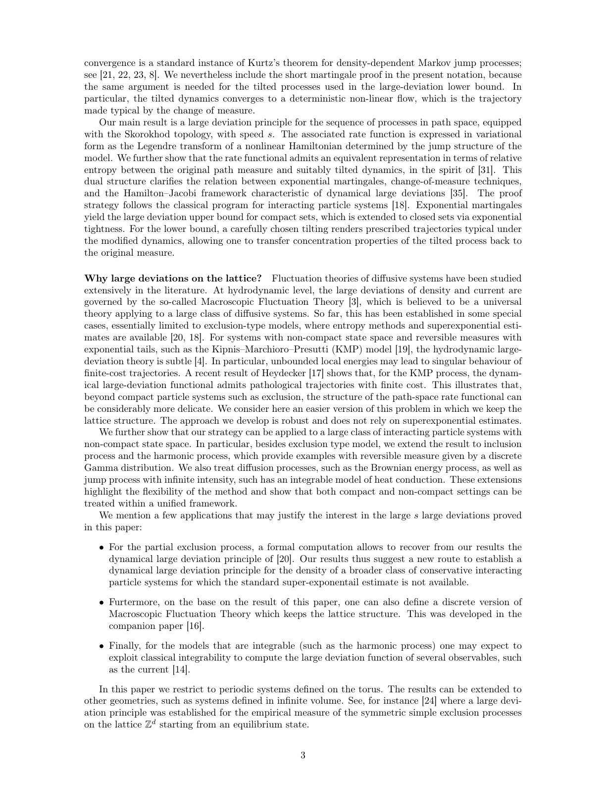
<figcaption class="paper-figure-caption"><b>Fig 2.</b> Low-resolution page preview, page 3</figcaption>
</figure>
<figure class="paper-figure-card">
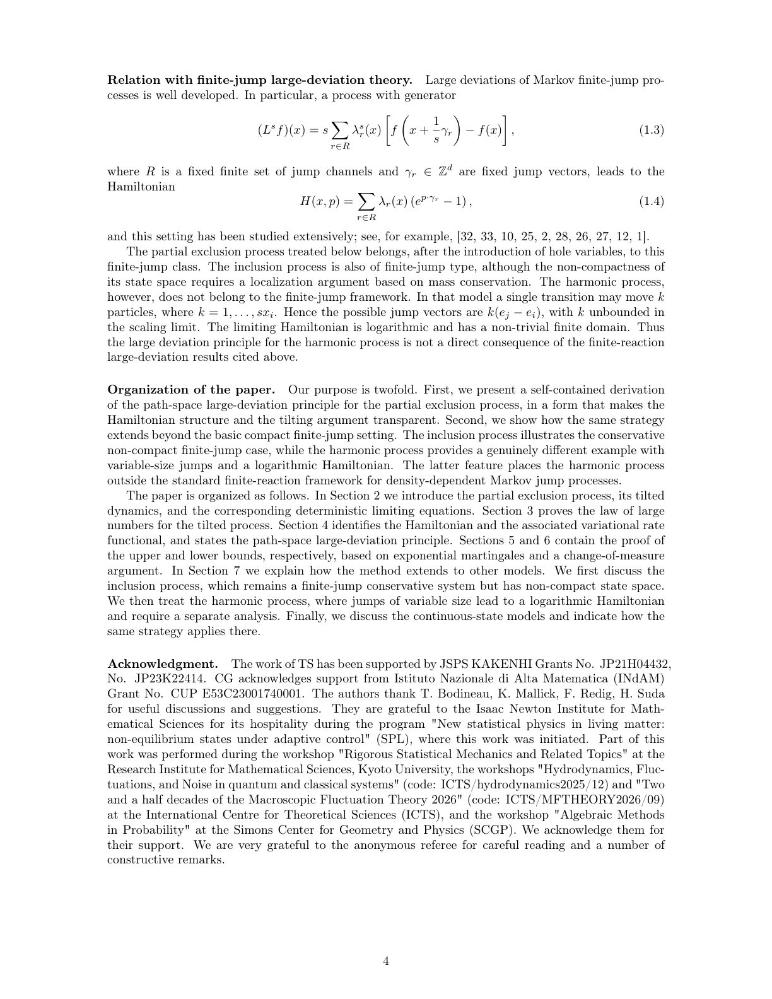
<figcaption class="paper-figure-caption"><b>Fig 3.</b> Low-resolution page preview, page 4</figcaption>
</figure>
<figure class="paper-figure-card">
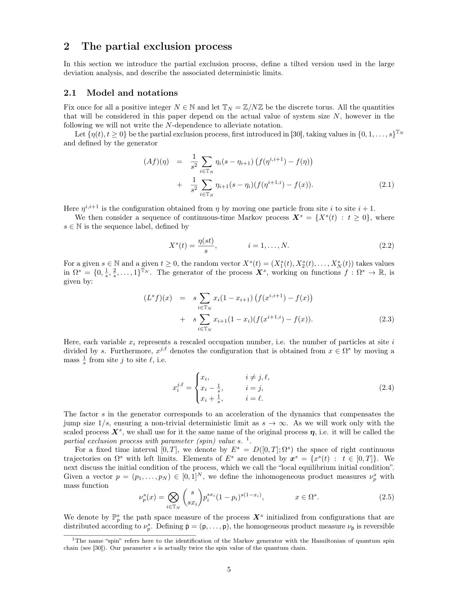
<figcaption class="paper-figure-caption"><b>Fig 4.</b> Low-resolution page preview, page 5</figcaption>
</figure>
<figure class="paper-figure-card">

<figcaption class="paper-figure-caption"><b>Fig 5.</b> Low-resolution page preview, page 6</figcaption>
</figure>
</div>
<p><strong>Summary.</strong> This work develops a general framework to prove the Path Space Large Deviation Principle for diverse interacting particle systems on a lattice. By employing advanced techniques like exponential tilting and martingale methods, the authors derive the rate function in terms of a nonlinear Hamiltonian. This provides a powerful theoretical tool for analyzing the rare, non-equilibrium dynamics of many-body systems.</p>
<p><strong>Why it may be interesting.</strong> The rigorous derivation of LDPs for complex, non-equilibrium dynamics (like those found in interacting quantum systems or open quantum systems) provides powerful tools for understanding rare events and long-time behavior.</p>
<details>
<summary>Detailed structure</summary>
<p><strong>Main problem.</strong> The paper investigates the Path Space Large Deviation Principle (LDP) for various interacting particle systems on a lattice.</p>
<p><strong>Main result.</strong> It establishes the path space LDP for these systems, showing the rate function is given by the Legendre transform of a nonlinear Hamiltonian.</p>
<p><strong>Method.</strong> The proof relies on martingale techniques, exponential tightness, and a change-of-measure argument using exponential tilting.</p>
<p><strong>Model / system.</strong> The primary models are interacting particle systems on a discrete torus, including the partial exclusion process, inclusion process, and continuous models like the Brownian energy process.</p>
<p><strong>Key observables.</strong> The rate function I(x), the deterministic flow X(t), and the associated Hamiltonian H(x, w).</p>
<p><strong>Important parameters / regimes.</strong> The scaling parameter s, which controls the convergence to the hydrodynamic limit.</p>
<p><strong>Assumptions / limitations.</strong> The analysis is initially restricted to periodic systems on the torus, though the method is shown to extend to non-compact state spaces.</p>
<p><strong>Paper structure.</strong> The paper follows a structure of first verifying the Law of Large Numbers (Kurtz-type) for the original and tilted processes, then establishing the path space LDP bounds using upper and lower bounds derived from exponential martingales and Girsanov-type theorems.</p>
</details>
<details>
<summary>Abstract</summary>
<p>We investigate the path space large deviation principle (LDP) for a class of interacting particle systems on a fixed finite discrete torus. As an illustrative example, we use the partial exclusion process with maximal occupation of $s$ particles. We first verify the standard Kurtz-type law of large numbers for the original and tilted processes, thereby identifying the deterministic flows around which the large deviations are formulated. We then establish the path space LDP, with speed $s$, and identify the associated rate function in variational form as the Legendre transform of a nonlinear Hamiltonian. The proof relies on martingale techniques, exponential tightness, and a change-of-measure argument based on exponential tilting, which renders atypical trajectories typical under a modified dynamics.   We also explain how the same strategy extends to further interacting particle systems. The inclusion process illustrates the conservative non-compact finite-jump case. The harmonic process is qualitatively different: a single transition may move a variable number of particles, and the limiting Hamiltonian is logarithmic with a non-trivial domain. This places the harmonic process outside the usual finite-reaction framework for density-dependent Markov jump processes. Finally, we discuss continuous-state energy-exchange models, such as the Brownian energy process and an integrable heat-conduction model, to indicate how the same Hamiltonian large-deviation formalism appears beyond discrete-state particle systems.</p>
</details>
<p><sub><a href="#top">↑ back to top</a></sub></p>

<p><a id="paper-2610.34399"></a></p>
<h3 id="pauli-ball-discrepancy-and-stability-of-quantum-codes"><a href="http://arxiv.org/abs/2610.34399v1">Pauli-ball discrepancy and stability of quantum codes</a></h3>
<p><strong>Authors:</strong> Aryeh Lev Zabokritskiy "Yohananov"<br>
<strong>Type:</strong> theory · <strong>Category:</strong> quantum information and computing · <strong>PDF:</strong> <a href="https://arxiv.org/pdf/2610.34399v1">https://arxiv.org/pdf/2610.34399v1</a><br>
<strong>Analysis basis:</strong> full PDF text, analyzed in chunks</p>
<div class="figure-strip-hint">↔ Scroll figures horizontally</div>
<div class="paper-figures-scroll">
<figure class="paper-figure-card">

<figcaption class="paper-figure-caption"><b>Fig 1.</b> Low-resolution page preview, page 2</figcaption>
</figure>
<figure class="paper-figure-card">

<figcaption class="paper-figure-caption"><b>Fig 2.</b> Low-resolution page preview, page 3</figcaption>
</figure>
<figure class="paper-figure-card">

<figcaption class="paper-figure-caption"><b>Fig 3.</b> Low-resolution page preview, page 4</figcaption>
</figure>
<figure class="paper-figure-card">

<figcaption class="paper-figure-caption"><b>Fig 4.</b> Low-resolution page preview, page 5</figcaption>
</figure>
<figure class="paper-figure-card">

<figcaption class="paper-figure-caption"><b>Fig 5.</b> Low-resolution page preview, page 6</figcaption>
</figure>
</div>
<p><strong>Summary.</strong> This theoretical paper develops the Pauli-ball discrepancy as a quantitative measure of how well a quantum code covers its error space. It establishes deep mathematical links showing that minimizing this discrepancy is equivalent to achieving optimal error correction properties, particularly for highly entangled states. This work provides advanced diagnostic tools for assessing quantum code performance.</p>
<p><strong>Why it may be interesting.</strong> The rigorous mathematical connection established between a global geometric measure (discrepancy) and local error metrics (Gram matrix deviation, fidelity) provides powerful diagnostic tools for characterizing the performance limits of quantum codes.</p>
<details>
<summary>Detailed structure</summary>
<p><strong>Main problem.</strong> The paper quantifies the uniform coverage of the physical Hilbert space by Pauli error images of a quantum code using the Pauli-ball discrepancy, linking this measure to the code's error correction stability.</p>
<p><strong>Main result.</strong> The discrepancy excess provides explicit linear bounds on the squared Gram defect, and the minimum discrepancy is achieved exactly by highly entangled states like absolutely maximally entangled states.</p>
<p><strong>Method.</strong> The analysis employs spectral methods, relating the discrepancy to quantum enumerators and solving the problem via Delsarte linear programming techniques.</p>
<p><strong>Model / system.</strong> The system is a quantum error correcting code defined by a rank-$K$ projector $P$ acting on a Hilbert space $H = (\mathbb{C}^q)^{\otimes n}$. Errors are modeled by Pauli operators within a specified error ball.</p>
<p><strong>Key observables.</strong> Pauli-ball discrepancy ($D_Q(P)$), discrepancy excess ($g(P)$), squared Gram defect ($\|G_e - I_K V_e\|^2_{	ext{HS}}$), diamond error, and entanglement infidelity.</p>
<p><strong>Important parameters / regimes.</strong> Quantum MDS parameters, one-error Hamming parameters, and the error radius $e$ relative to the code distance $\Delta$.</p>
<p><strong>Assumptions / limitations.</strong> The analysis relies on specific parameter regimes (MDS/Hamming) and the assumption that the error model is restricted to the span of the Pauli ball.</p>
<p><strong>Paper structure.</strong> The paper progresses from defining the Pauli-ball discrepancy and its relation to code coverage, deriving spectral identities using quantum enumerators, establishing linear bounds between discrepancy and Gram defect, and finally applying these results to specific cases like pure states and five-qubit systems.</p>
</details>
<details>
<summary>Abstract</summary>
<p>The Pauli-ball discrepancy, a quadratic discrepancy summed over all error radii, measures how uniformly the Pauli error images of a $K$-dimensional quantum code cover the $d$-dimensional Hilbert space. At parameters attaining equality in the quantum Singleton bound with minimum code distance $\geq3$, or in the one-error Hamming bound with prime-power local dimension, the discrepancy of every projector of the prescribed rank equals an explicit benchmark plus an exact nonnegative remainder, which vanishes precisely for pure quantum maximum-distance-separable codes and nondegenerate perfect codes, respectively. For a Pauli ball of radius $e$ below half the target distance and size $V_e$, this remainder linearly bounds the squared Hilbert--Schmidt distance of the error-image Gram matrix from the identity. When $KV_e\leq d$, it linearly bounds the diamond error and entanglement infidelity of a noise-independent polar recovery under any noise in that ball's span. For five qubits, we obtain the sharp rank-two Gram constant and exact logical channels of rotated codes attaining this linear order in diamond error. For pure states, the discrepancy equals a pure-state benchmark plus a positive weighted sum of marginal-purity defects, so absolutely maximally entangled states, when they exist, are exactly the minimizers.</p>
</details>
<p><sub><a href="#top">↑ back to top</a></sub></p>

<p><a id="paper-2610.35196"></a></p>
<h3 id="photometric-redshift-estimation-with-hybrid-quantum-neural-network"><a href="http://arxiv.org/abs/2610.35196v1">Photometric Redshift Estimation with Hybrid Quantum Neural Network</a></h3>
<p><strong>Authors:</strong> Giuseppe Sarracino, Vincenzo Fabrizio Cardone, Irene Graziotti, Crescenzo Tortora, Roberto Scaramella, Andrea Bulgarelli, Carlo Burigana, Farida Farsian, Massimo Meneghetti, Giuseppe Murante, Niccolò Parmiggiani, Alessandro Rizzo, Francesco Schillirò, Vincenzo Testa, Tiziana Trombetti, Fabio Roberto Vitello<br>
<strong>Type:</strong> theory · <strong>Category:</strong> disordered systems and neural networks · <strong>PDF:</strong> <a href="https://arxiv.org/pdf/2610.35196v1">https://arxiv.org/pdf/2610.35196v1</a><br>
<strong>Analysis basis:</strong> full PDF text, analyzed in chunks</p>
<div class="figure-strip-hint">↔ Scroll figures horizontally</div>
<div class="paper-figures-scroll">
<figure class="paper-figure-card">

<figcaption class="paper-figure-caption"><b>Fig 1.</b> Figure 1: The Ansatz used for our HQNN. On the left panel, the initial embedding layer to encode the classical data inside the quantum circuit; on the right panel, the initial trainable rotation block followed by one of the five repetitions composing the total network.</figcaption>
</figure>
<figure class="paper-figure-card">

<figcaption class="paper-figure-caption"><b>Fig 2.</b> Figure 2: One exemplary result from our tests for photometric redshift derived by our HQNN in comparison with the reference redshift data from the KIDS+VIKING dataset. Here, the errors on the single points are defined as 𝜎𝑖= 𝜎𝑁𝑀𝐴𝐷(1 + 𝑧𝑖), to reflect the typical error magnitude at different redshifts. On the left panel, the red line almost coincides with the green one.</figcaption>
</figure>
<figure class="paper-figure-card">

<figcaption class="paper-figure-caption"><b>Fig 3.</b> Figure 3: Summary statistics of our results comparing the performance of our HQNN to a classical NN. Here are the mean and standard deviations of the statistical indicators considered in our analysis.</figcaption>
</figure>
</div>
<p><strong>Summary.</strong> This paper applies a Hybrid Quantum Neural Network (HQNN) to estimate the photometric redshift of galaxies using data from major infrared and optical surveys. The HQNN, which integrates quantum circuits into a classical neural network framework, demonstrates superior statistical performance metrics ($R^2$, MSE) compared to a comparably structured classical neural network. This work suggests the viability of quantum machine learning for advanced astrophysical data analysis.</p>
<p><strong>Why it may be interesting.</strong> The application of quantum machine learning techniques, specifically HQNNs, to a complex, high-dimensional data regression problem in astrophysics demonstrates a novel intersection between quantum computation and data science.</p>
<details>
<summary>Detailed structure</summary>
<p><strong>Main problem.</strong> The paper addresses the challenge of accurately estimating the photometric redshift of galaxies using data from large astronomical surveys.</p>
<p><strong>Main result.</strong> The proposed Hybrid Quantum Neural Network (HQNN) consistently recovers the reference photometric redshift with high statistical fidelity, showing better $R^2$ and MSE compared to a classical neural network counterpart.</p>
<p><strong>Method.</strong> The authors developed and applied a Hybrid Quantum Neural Network (HQNN), which combines a classical linear layer with a variational quantum circuit, to the galaxy redshift estimation task.</p>
<p><strong>Model / system.</strong> The system uses a galaxy dataset from KIDS and VIKING, covering the optical to near-infrared spectrum. The HQNN is structured with an embedding layer and multiple repetition blocks acting on 5 qubits derived from Principal Component Analysis (PCA) of the input features.</p>
<p><strong>Key observables.</strong> Photometric redshift ($z_{pred}$ vs. reference $z_{test}$), $R^2$ score, and Normalized Median Absolute Deviation ($\sigma_{NMAD}$).</p>
<p><strong>Important parameters / regimes.</strong> The model uses 60 trainable quantum parameters and is trained using the Adam optimizer with a specific loss function (Weighted Mean Absolute Error).</p>
<p><strong>Assumptions / limitations.</strong> The analysis assumes that the HQNN structure provides a measurable advantage over classical NN architectures for this specific astrophysical regression problem.</p>
<p><strong>Figures summary.</strong> Figure 2 exemplifies the comparison of HQNN derived redshifts against reference redshifts, alongside a plot of residuals; Figure 3 summarizes the statistical comparison between HQNN and classical NN performance.</p>
<p><strong>Paper structure.</strong> The paper introduces the problem (photometric redshift estimation), details the HQNN methodology (including data preprocessing via PCA and the quantum circuit structure), presents the results comparing HQNN to a classical NN, and concludes by discussing the performance metrics.</p>
</details>
<details>
<summary>Abstract</summary>
<p>A Hybrid Quantum Neural Network (HQNN) is applied to recover the photometric redshift of a galaxy dataset built using data from two astronomical surveys, the Kilo-Degree Survey (KIDS) and the VISTA Kilo-Degree Infrared Galaxy (VIKING), which provide data with coverage from the optical to the near-infrared electromagnetic spectrum. The results are then compared with those obtained by a classical neural network. We see that HQNN consistently recovers the reference photometric redshift with a high statistical fidelity. Furthermore, both the $R^2$ and the MSE found by the HQNN are consistently better than those found by the classical counterpart (albeit consistent in the error range), proving the worth of further investigating these novel technologies for this particular astrophysical application.</p>
</details>
<p><sub><a href="#top">↑ back to top</a></sub></p>

<p><a id="paper-2610.33185"></a></p>
<h3 id="post-quantum-perfect-zero-knowledge-arguments-for-np-from-any-one-way-permutation"><a href="http://arxiv.org/abs/2610.33185v1">Post-Quantum Perfect Zero-Knowledge Arguments for NP From Any One-Way Permutation</a></h3>
<p><strong>Authors:</strong> Frédéric Dupuis, Rémi Ligez, Khaireddine Medhioub, Louis Salvail, Louis-Charles Thibodeau<br>
<strong>Type:</strong> theory · <strong>Category:</strong> quantum information and computing · <strong>PDF:</strong> <a href="https://arxiv.org/pdf/2610.33185v1">https://arxiv.org/pdf/2610.33185v1</a><br>
<strong>Analysis basis:</strong> full PDF text, analyzed in chunks</p>
<div class="figure-strip-hint">↔ Scroll figures horizontally</div>
<div class="paper-figures-scroll">
<figure class="paper-figure-card">

<figcaption class="paper-figure-caption"><b>Fig 1.</b> Fig. 3. The action of the reflection (2Γ −1) on the state ∆0|ψ⟩ ∥∆0|ψ⟩∥. The angle between this state and its reflection is 2θ, where sin2(θ) = ∥∆1|ψ⟩∥2 is the probability of a successful event.</figcaption>
</figure>
<figure class="paper-figure-card">

<figcaption class="paper-figure-caption"><b>Fig 2.</b> Fig. 4. On auxiliary input state ρ and security parameter n, Φn x,w(ρ) denotes V’s resulting state after the interaction [P(1n, x, w) ⇄V(1n, x, ρ)], whereas Ψn x(ρ) denotes the output state of SV on input (1n, x, ρ).</figcaption>
</figure>
</div>
<p><strong>Summary.</strong> This paper achieves a significant theoretical result by showing that post-quantum one-way permutations are sufficient to build perfect zero-knowledge argument systems for all of NP, even against quantum adversaries. The authors achieve this by analyzing the 'novy' commitment scheme and employing advanced techniques involving quantum super-operators to prove the necessary security properties.</p>
<p><strong>Why it may be interesting.</strong> This work is highly relevant as it pushes the boundaries of quantum-resistant cryptography by connecting fundamental computational complexity classes (NP) to quantum-secure primitives (one-way permutations).</p>
<details>
<summary>Detailed structure</summary>
<p><strong>Main problem.</strong> To demonstrate that post-quantum one-way permutations are sufficient to construct perfect zero-knowledge classical argument systems for all of NP, secure against quantum adversaries.</p>
<p><strong>Main result.</strong> The authors show that using the 'novy' bit commitment scheme, they establish a post-quantum perfect zero-knowledge argument system for all of NP with a soundness error bounded by 14/15.</p>
<p><strong>Method.</strong> The proof involves constructing and analyzing quantum super-operators ($\Omega, \Xi, \Psi$) that model the entire interactive proof protocol, comparing it to the simulator's action to prove zero-knowledge.</p>
<p><strong>Model / system.</strong> The underlying model relies on the existence of post-quantum one-way permutations and the use of the 'novy' interactive hashing commitment scheme to build the argument system for NP.</p>
<p><strong>Key observables.</strong> The final state of the verifier after the protocol ($\Xi_{G',t,ch,H',u}(
ho)$) and the output state of the simulator ($
ho_8$).</p>
<p><strong>Important parameters / regimes.</strong> The soundness error (14/15), the security assumption (post-quantum one-way permutations), and the structure of the commitment scheme (novy).</p>
<p><strong>Assumptions / limitations.</strong> The existence of post-quantum one-way permutations and the perfect hiding property of the bit commitment scheme ($\Pi$).</p>
<p><strong>Figures summary.</strong> Figure 1 illustrates the novy bit commitment scheme phases. Figure 2 details the classical inverter ($ ext{InvS}_{\pi}$) used to analyze computational soundness.</p>
<p><strong>Paper structure.</strong> The paper progresses by first establishing the properties of the novy scheme (Theorem 1), then developing the quantum inverter ($  ext{qInvS}_{\pi}$) to prove soundness (Chunk 2), and finally formalizing the zero-knowledge proof using super-operators ($\Omega, \Xi, \Psi$) to prove the final zero-knowledge result (Chunks 3 &amp; 4).</p>
</details>
<details>
<summary>Abstract</summary>
<p>In this paper, we show for the first time that post-quantum one-way permutations are sufficient for perfect zero-knowledge classical arguments for all of NP with security guaranteed against quantum adversaries. We first establish that Naor, Ostrovsky,Venkatesen, and Yung's bit commitment scheme built from any permutation using interactive hashing, called the NOVY scheme, is sum-binding and collapse-binding against quantum polynomial-time committers provided the permutation is post-quantum one-way. We then show that the collapse-binding property of the NOVY scheme allows for Blum's perfect zero-knowledge argument for HAMCYCLE to remain so exactly as it stands against quantum adversaries.</p>
</details>
<p><sub><a href="#top">↑ back to top</a></sub></p>

<p><a id="paper-2610.34635"></a></p>
<h3 id="quantum-anomaly-detection-in-network-traffic-using-variational-quantum-classifiers"><a href="http://arxiv.org/abs/2610.34635v1">Quantum Anomaly Detection in network traffic using Variational Quantum Classifiers</a></h3>
<p><strong>Authors:</strong> Mir H M Ilham, Hardique Dasore, Abdulrahman Ababneh, Hafidz A Kabira, Samyam Shrestha, Jeyasri Sundar, Shah Haque, Eric Howard<br>
<strong>Type:</strong> both · <strong>Category:</strong> quantum information and computing · <strong>PDF:</strong> <a href="https://arxiv.org/pdf/2610.34635v1">https://arxiv.org/pdf/2610.34635v1</a><br>
<strong>Analysis basis:</strong> full PDF text, analyzed in chunks</p>
<div class="figure-strip-hint">↔ Scroll figures horizontally</div>
<div class="paper-figures-scroll">
<figure class="paper-figure-card">

<figcaption class="paper-figure-caption"><b>Fig 1.</b> Figure 1: The methodology overview illustrates the pipeline steps of data generation, preprocessing, quantum feature encoding, hybrid quantum-classical training, and model evaluation.</figcaption>
</figure>
<figure class="paper-figure-card">

<figcaption class="paper-figure-caption"><b>Fig 2.</b> Figure 2: The feature distribution plot visualizes both individual feature distributions (diagonal subplots) and pairwise relationships between features in a grid format.</figcaption>
</figure>
<figure class="paper-figure-card">

<figcaption class="paper-figure-caption"><b>Fig 3.</b> Figure 3: Principal Component Analysis (PCA) was applied to project the dataset features into a two dimensional space. It is a statistical dimensionality reduction technique that transforms the data while preserving maximum possible variance.</figcaption>
</figure>
<figure class="paper-figure-card">

<figcaption class="paper-figure-caption"><b>Fig 4.</b> Figure 4: A feature correlation heatmap visualizes correlation among variables in the data. In this case, it can be observed that strong positive relationships exist among all features.</figcaption>
</figure>
<figure class="paper-figure-card">

<figcaption class="paper-figure-caption"><b>Fig 5.</b> Figure 5: VQC-1 feature encoding using the ZZFeatureMap maps classical input features into a quantum state by applying both single-qubit rotations and entangling operations.</figcaption>
</figure>
</div>
<p><strong>Summary.</strong> This paper investigates using Variational Quantum Classifiers (VQC) for network anomaly detection, benchmarking various quantum architectures against classical ML models. While the best VQC configuration showed promise, classical algorithms proved superior on the synthetic data due to its simple structure. The work highlights the potential of VQCs for more complex, noisy, high-dimensional problems in the future.</p>
<p><strong>Why it may be interesting.</strong> It applies quantum machine learning techniques (VQC) to a real-world data problem (cybersecurity), providing a structured benchmark of quantum advantage in a domain relevant to quantum information processing.</p>
<details>
<summary>Detailed structure</summary>
<p><strong>Main problem.</strong> Developing advanced network anomaly detection systems to handle high-dimensional data where classical machine learning models face computational bottlenecks.</p>
<p><strong>Main result.</strong> Classical machine learning models significantly outperformed the tested Variational Quantum Classifiers (VQC) on synthetic data, achieving perfect classification.</p>
<p><strong>Method.</strong> The study systematically evaluated multiple VQC architectures by varying feature encoding, ansatz circuits, and optimizers, comparing them against classical baselines.</p>
<p><strong>Model / system.</strong> The core model is the Variational Quantum Classifier (VQC), a hybrid quantum-classical approach that maps classical data into a quantum state $|\psi(\mathbf{x}_i)
angle$ manipulated by a parameterized unitary $U(	heta)$.</p>
<p><strong>Key observables.</strong> Classification accuracy, F1-Score, optimization stability, and the performance gap compared to classical models.</p>
<p><strong>Important parameters / regimes.</strong> Circuit depth (VQC-1 to VQC-4), feature encoding methods (e.g., ZFeatureMap), and optimization parameters (e.g., ADAM optimizer).</p>
<p><strong>Assumptions / limitations.</strong> The synthetic dataset used has low intrinsic complexity, allowing classical models to achieve perfect separation, and the study operates within the constraints of the NISQ era.</p>
<p><strong>Figures summary.</strong> Figures illustrate the methodology flow, feature distributions (showing correlation), and PCA visualizations showing cluster separation between normal and anomalous traffic.</p>
<p><strong>Paper structure.</strong> The paper introduces the problem, details the VQC methodology (data preprocessing, quantum encoding, hybrid training), presents systematic comparative results across different VQC architectures, and concludes with a discussion on future potential.</p>
</details>
<details>
<summary>Abstract</summary>
<p>The increasingly complex cybersecurity landscape requires more advanced network anomaly detection systems. Although, classical machine learning models are known to be effective, they reach computational bottlenecks when processing high-dimensional data. This study investigates the potential of Quantum Machine Learning (QML) for network traffic anomaly detection by evaluating four distinct Variational Quantum Classifier (VQC) architectures. A synthetic network traffic dataset is generated for the evaluations. The VQC models systematically varied feature encoding methods, parameterized ansatz circuits, quantum neural network types, and classical optimizers. Experimental results show that a trade-off exists between circuit expressivity and optimization stability. Deeper circuits (VQC-4) achieved higher accuracy of upto 89.0\%, while simultaneously being sensitive to training conditions. A shallower variant (VQC-1) under performed, although it had consistent and stable optimization curves. Class-dependent biases were also observed such as in VQC-2, where the model struggled to find an effective decision boundary, and produced a large number of false negatives. The best performing model in this study (VQC-3) combined ZFeatureMap with RealAmplitudes ansatz, optimized using ADAM. Comparative analysis against classical machine learning models such as Support Vector Machine and Random Forest reveal a performance gap, where classical models are able to achieve perfect classification performance on the synthetic data. It is concluded that classical algorithms remain dominant in their ability to classify structured data with relatively simple class separations. However, due to the observed potential of certain VQC configurations to learn decision boundaries to classify data, their utility for future applications in noisier, higher-dimensional problems is highlighted.</p>
</details>
<p><sub><a href="#top">↑ back to top</a></sub></p>

<p><a id="paper-2610.33188"></a></p>
<h3 id="quantum-heuristic-separation-of-comb-inequalities-for-the-travelling-salesman-problem"><a href="http://arxiv.org/abs/2610.33188v1">Quantum Heuristic Separation of Comb Inequalities for the Travelling Salesman Problem</a></h3>
<p><strong>Authors:</strong> Yohan Finet, Victor Drouin-Touchette<br>
<strong>Type:</strong> theory · <strong>Category:</strong> quantum information and computing · <strong>PDF:</strong> <a href="https://arxiv.org/pdf/2610.33188v1">https://arxiv.org/pdf/2610.33188v1</a><br>
<strong>Analysis basis:</strong> full PDF text, analyzed in chunks</p>
<div class="figure-strip-hint">↔ Scroll figures horizontally</div>
<div class="paper-figures-scroll">
<figure class="paper-figure-card">

<figcaption class="paper-figure-caption"><b>Fig 1.</b> Figure 1: Branch-and-cut algorithm. The cost vector is denoted by c and x is the best integer solution found so far. The pair ⟨F0, F1⟩consists of disjoint edge sets F0, F1 ⊆E. L is a set of inequalities, and P(L, F0, F1) is the linear program minimizing c⊺x subject to (3b), (3d), L, xe = 0 for e ∈F0 and xe = 1 for e ∈F1. Its solution is denoted x∗.</figcaption>
</figure>
<figure class="paper-figure-card">

<figcaption class="paper-figure-caption"><b>Fig 2.</b> Figure 3: Circuit UT for preparing a superposition of teeth assignments.</figcaption>
</figure>
<figure class="paper-figure-card">

<figcaption class="paper-figure-caption"><b>Fig 3.</b> Figure 4: Circuit UH for preparing a superposition of vertex assignments to the handle. The Tj and Mask registers carry their states from tooth preparation while the other registers are in the |0⟩⊗n state initially.</figcaption>
</figure>
<figure class="paper-figure-card">

<figcaption class="paper-figure-caption"><b>Fig 4.</b> Figure 5: Decomposition of the multi-controlled E gate appearing in Figures 3 and 4 for n = 3. Conditioned on the data qubits, controlled-swap (Fredkin) gates are applied in cascade. This maps the number of data qubits in state |1⟩to a one-hot encoding in the Count register.</figcaption>
</figure>
<figure class="paper-figure-card">

<figcaption class="paper-figure-caption"><b>Fig 5.</b> Figure 5 illustrates the implementation of the multi-controlled E gate for n = 3. This circuit is inspired by a similar one presented by Kaye and Mosca [43]. Initially, qubit 0 of the Count register is prepared in the state |1⟩, while all other qubits in this register are initialized to |0⟩. A cascade of conditional swap gates (Fredkin gates [29]) is then applied, with the data qubits serving as controls. These data qubits correspond to the Mask register in Fig. 3 and to the Tj registers in Fig. 4. For each data qubit in state |1⟩, the |1⟩state in the Count register is shifted by one position. Consequently, after processing all data qubits, the Hamming weight of the Data register is encoded...</figcaption>
</figure>
</div>
<p><strong>Summary.</strong> This paper introduces a quantum heuristic approach to tackle the difficult separation problem for comb inequalities used in solving the Traveling Salesman Problem. It utilizes the Grover-Mixer QAOA ansatz to search for violated inequalities within a quantum superposition of all possible combs. While theoretically polynomial under certain budgets, the authors caution that the practical sufficiency of these budgets remains unproven.</p>
<p><strong>Why it may be interesting.</strong> It directly applies advanced quantum algorithms (QAOA, superposition preparation) to a hard combinatorial optimization problem (TSP), bridging quantum computation with classical mathematical programming theory.</p>
<details>
<summary>Detailed structure</summary>
<p><strong>Main problem.</strong> The core problem is developing a quantum heuristic algorithm to solve the computationally challenging separation problem for comb inequalities, which are crucial cutting planes for the Traveling Salesman Problem (TSP).</p>
<p><strong>Main result.</strong> The authors propose a quantum heuristic separation algorithm using the Grover-Mixer Quantum Alternating Operator Ansatz (GM-QAOA) to search for violated inequalities.</p>
<p><strong>Method.</strong> The method involves preparing a uniform superposition of all relevant combs using quantum gates and then applying the GM-QAOA framework to search the state space for violations.</p>
<p><strong>Model / system.</strong> The underlying model is the TSP, formulated as an Integer Linear Program (ILP) whose relaxation requires finding violated comb inequalities. The quantum computation utilizes qubits and quantum circuits to encode and search the comb structure.</p>
<p><strong>Key observables.</strong> The primary observable is the detection of a violated comb inequality (i.e., finding a slack $
eq 0$ in the LP relaxation).</p>
<p><strong>Important parameters / regimes.</strong> The algorithm's performance is analyzed under prescribed polynomial budgets for QAOA rounds, parameter optimization steps, and samples gathered.</p>
<p><strong>Assumptions / limitations.</strong> The authors explicitly state that they provide no evidence that the polynomial budgets are sufficient to find a violated comb with constant probability when one exists.</p>
<p><strong>Figures summary.</strong> Figure 1 illustrates the classical Branch-and-cut algorithm process, while Figure 2 shows the structure of a comb with a handle and multiple teeth.</p>
<p><strong>Paper structure.</strong> The paper moves from establishing the classical difficulty of the separation problem (TSP/comb inequalities) to proposing a quantum heuristic solution utilizing the GM-QAOA framework, detailing the necessary quantum circuit constructions and resource analysis.</p>
</details>
<details>
<summary>Abstract</summary>
<p>Comb inequalities are essential cutting planes for the travelling salesman problem, yet their separation remains computationally challenging. We propose a quantum heuristic separation algorithm for this family of inequalities. The algorithm uses a procedure that prepares a uniform superposition of all combs with a fixed number of teeth using polynomially many gates and qubits. As part of this procedure, we present a circuit that coherently encodes the Hamming weight of a data register in one-hot form in an auxiliary register. The separation algorithm then searches for violated inequalities using the Grover-Mixer Quantum Alternating Operator Ansatz. Its running time is polynomial under prescribed polynomial budgets for the number of QAOA rounds, parameter optimization steps and samples gathered, although we provide no evidence that such budgets suffice to find a violated comb with constant probability when one exists. We provide an explicit circuit construction for the mixer unitary, the full problem Hamiltonian and a resource analysis.</p>
</details>
<p><sub><a href="#top">↑ back to top</a></sub></p>

<p><a id="paper-2610.35300"></a></p>
<h3 id="quantum-classical-framework-for-the-joint-optimization-of-bidirectional-ev-charging-and-trip-assignment"><a href="http://arxiv.org/abs/2610.35300v1">Quantum-Classical Framework for the Joint Optimization of Bidirectional EV Charging and Trip Assignment</a></h3>
<p><strong>Authors:</strong> Mustafa Musab, Sebastian Schmitt, Markus Wappler, Jörg Lässig, Daniel Müssig<br>
<strong>Type:</strong> both · <strong>Category:</strong> quantum information and computing · <strong>PDF:</strong> <a href="https://arxiv.org/pdf/2610.35300v1">https://arxiv.org/pdf/2610.35300v1</a><br>
<strong>Analysis basis:</strong> full PDF text, analyzed in chunks</p>
<div class="figure-strip-hint">↔ Scroll figures horizontally</div>
<div class="paper-figures-scroll">
<figure class="paper-figure-card">

<figcaption class="paper-figure-caption"><b>Fig 1.</b> Fig. 1: IIS extraction illustrated on a toy instance with three trips 𝐴, 𝐵, and 𝐶assigned to a single EV. Panel (a) shows the candidate assignment ¯𝐴𝑛= {𝐴, 𝐵, 𝐶} exhausting the battery during trip 𝐶. Panel (b) demonstrates that removing 𝐴leaves the subset {𝐵, 𝐶} infeasible, identifying 𝐴as non-essential to the conflict. Panels (c) and (d) verify that the remaining set {𝐵, 𝐶} is irreducible, as removing either element restores feasibility. The resulting minimal conflict 𝐶𝑛= {𝐵, 𝐶} generates the combinatorial cut 𝑟𝑛,𝐵+ 𝑟𝑛,𝐶≤1, strictly excluding any master assignment that allocates vehicle 𝑛a superset of {𝐵, 𝐶}. If ¯𝐴𝑛contains multiple independent conflicts, the deletion filter extracts one...</figcaption>
</figure>
<figure class="paper-figure-card">

<figcaption class="paper-figure-caption"><b>Fig 2.</b> Fig. 2: Distribution of logic-based conflict cut sizes (left) and their associated QUBO encoding costs (right) across 50 medium instances.</figcaption>
</figure>
</div>
<p><strong>Summary.</strong> This paper tackles the complex, NP-hard problem of optimizing EV charging and trip assignments using a novel hybrid quantum-classical approach. It introduces a Benders decomposition framework that uses logic-based cuts to minimize quantum overhead, alongside a recursive formulation to drastically reduce model size. The method is validated by achieving near-optimal solutions on benchmarks and running a small test case on actual quantum hardware.</p>
<p><strong>Why it may be interesting.</strong> While the application is in optimization/power systems, the core methodology involves mapping complex combinatorial constraints into quantum circuits (QAOA) and developing quantum-aware decomposition techniques, which is relevant to quantum algorithm development for constrained optimization.</p>
<details>
<summary>Detailed structure</summary>
<p><strong>Main problem.</strong> The paper addresses the NP-hard joint optimization problem of scheduling electric vehicle (EV) trips and managing bidirectional charging (V2G).</p>
<p><strong>Main result.</strong> A hybrid quantum-classical Benders decomposition framework is proposed that successfully recovers MILP-optimal solutions on benchmarks using a low auxiliary-qubit budget.</p>
<p><strong>Method.</strong> It combines Benders decomposition, using logic-based conflict cuts to reduce qubit overhead, with a sparse recursive SoC formulation for model size reduction.</p>
<p><strong>Model / system.</strong> The system models EV fleets with bidirectional charging capabilities, formulated as a Mixed-Integer Linear Program (MILP) solved via a Master Problem (MP) on a quantum computer (QAOA) and a classical Subproblem (SP).</p>
<p><strong>Key observables.</strong> Benders convergence gap, relative gap compared to direct MILP, and the number of non-zero elements (nnz) in the constraint matrix.</p>
<p><strong>Important parameters / regimes.</strong> Time horizon (T), number of EVs (N_EV), maximum charging power (l_max), and the required final State-of-Charge (E_min^n).</p>
<p><strong>Assumptions / limitations.</strong> The logic-based cut method assumes the grid power capacity is sufficient, and the quantum encoding relies on mapping constraints to penalty terms in the Hamiltonian.</p>
<p><strong>Figures summary.</strong> Figures illustrate the process of extracting Irreducible Inconsistent Subsystems (IIS) to generate combinatorial conflict cuts, and tables compare the performance of the hybrid Benders approach against direct MILP solvers.</p>
<p><strong>Paper structure.</strong> The paper introduces the NP-hard problem, details the hybrid Benders decomposition, presents the novel sparse recursive SoC formulation, and validates the framework by showing convergence on benchmark instances and executing a proof-of-concept on IBM quantum hardware.</p>
</details>
<details>
<summary>Abstract</summary>
<p>The integration of bidirectional (V2G) charging allows electric vehicle (EV) fleets to operate as distributed energy assets. However, the joint optimization of charging schedules and trip assignments is NP-hard. Moreover, bidirectional power flows create non-monotonic state-of-charge (SoC) dynamics that weaken standard dual-based Benders cuts. We propose a hybrid quantum-classical Benders decomposition framework. To overcome the qubit overhead associated with encoding feasibility cuts, we introduce logic-based conflict cuts, which require near-zero auxiliary qubits. Furthermore, we develop a sparse recursive SoC formulation that reduces the constraint-matrix density by a factor of T/3 in the horizon length T. We demonstrate that our framework recovers MILP-optimal solutions on benchmark instances with a low auxiliary-qubit budget, and, as a minimal proof of concept, we execute a small instance end-to-end on IBM quantum hardware.</p>
</details>
<p><sub><a href="#top">↑ back to top</a></sub></p>
<hr>
<p>
<a href="index.html">← Index</a>
 · <a href="papers_07.html">← Previous</a> · <a href="papers_09.html">Next →</a>
</p>
<hr>

</body>
</html>
